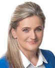

2026-07-29
Projekt wpłynął do Sejmu Druk nr 2995 ↗
w-tokuustawaIII czytanie na posiedzeniu Sejmu (2026-11-19)Sejm 10/2995
| Proces | Sejm kadencja 10, nr 2995 |
|---|---|
| Wpłynął | 2026-07-29 |
| Ostatnia zmiana źródła | 2026-11-19 |
| RCL | legislacja.rcl.gov.pl ↗ |
| Źródło | api.sejm.gov.pl ↗ |
299 zdarzeń

10. kadencja, 69. posiedzenie, 1. dzień - Poseł Sprawozdawca Piotr Głowski 10. kadencja, 69. posiedzenie, 1. dzień (17-11-2026) 10. punkt porządku dziennego: Sprawozdanie Komisji Gospodarki Morskiej i Żeglugi Śródlądowej o rządowym projekcie ustawy o zmianie ustawy o rejestracji jachtów i innych jednostek pływających o długości do 24 m oraz ustawy o bezpieczeństwie morskim (druki nr 2995 i 3220). Poseł Sprawozdawca Piotr Głowski: Pani Marszałek! Panie Ministrze! Wysoka Izbo! Mam zaszczyt przedstawić sprawozdanie Komisji Gospodarki Morskiej i Żeglugi Śródlądowej o rządowym projekcie ustawy o zmianie ustawy o rejestracji jachtów i innych jednostek pływających o długości do 24 m oraz ustawy o bezpieczeństwie morskim. Chciałbym poświęcić nieco więcej uwagi przyczynom wprowadzenia tej nowelizacji, ponieważ bez zrozumienia sytuacji, która doprowadziła do przygotowania projektu, trudno właściwie ocenić jego poszczególne rozwiązania. Dlaczego potrzebna jest zmiana przepisów? Podstawowy problem polega na tym, że dotychczasowy system rejestracji jachtów umożliwiał uzyskanie polskiej przynależności państwowej przez jednostki należące do osób i podmiotów z całego świata, ale nie dawał administracji odpowiednich narzędzi do skutecznego sprawdzenia, kto faktycznie rejestruje jednostkę, czy przedstawiane dokumenty są prawdziwe i do czego ta jednostka jest wykorzystywana. Rejestr REJA24 powstał w 2018 r. Jego otwarty charakter miał swoje uzasadnienie. Polska chciała stworzyć dostępny system rejestracji jednostek pływających również dla właścicieli zagranicznych. Problem jednak w tym, że za otwartością systemu nie poszły odpowiednie mechanizmy kontroli. Skala zjawiska jest znacząca. Podczas pierwszego czytania projektu w komisji minister przedstawił informację, że w rejestrze znajduje się już ponad 112 tys. jednostek pływających. Wcześniej w uzasadnieniu projektu wskazywano, że ok. 40% jednostek należało do właścicieli mających miejsce zamieszkania lub siedzibę poza Polską, a ponad 10 tys. jednostek należało do podmiotów spoza Unii Europejskiej. Sama obecność zagranicznych właścicieli oczywiście nie jest problemem. Nie chodzi o to, żeby zamykać polski rejestr dla cudzoziemców. Chodzi o to, żeby państwo, które nadaje jednostce swoją przynależność, wiedziało, komu tę przynależność nadaje, i miało możliwość późniejszego kontaktu z właścicielem. Dotychczasowy system tego nie zapewniał. Przypomnę kilka konkretnych problemów przedstawionych w uzasadnieniu projektu i te, które pojawiały się na posiedzeniu komisji. Po pierwsze, rejestracja była niezwykle prosta. W praktyce wystarczyło złożyć wniosek, przedstawić dokumenty i uiścić opłatę w wysokości 80 zł. Można było to zrobić przez pełnomocnika, będąc na drugim końcu świata. Po drugie, powstał międzynarodowy rynek pośredników oferujących rejestrację jachtów pod polską banderą. Pośrednicy pobierali za swoje usługi wielokrotnie wyższe kwoty niż opłata urzędowa, ale nie ponosili odpowiedzialności za rzetelność przedstawianych dokumentów. Po trzecie, rejestrację prowadziły 382 organy. Ich doświadczenie było bardzo różne. Minister zwracał uwagę, że w ponad połowie urzędów rejestruje się średnio mniej niż jedną jednostkę miesięcznie. Trudno w takiej sytuacji oczekiwać, że każdy z tych urzędów będzie dysponował wyspecjalizowanymi pracownikami i odpowiednimi narzędziami do sprawdzania dokumentacji zagranicznych jednostek morskich. Zdarzały się sytuacje, w których administracja zagraniczna informowała polskie organy, że rzeczywiste parametry jednostki, np. jej długość, nie odpowiadają danym przedstawionym w dokumentach rejestracyjnych. Po czwarte, system nie zapewniał rzeczywistego kontaktu z właścicielem. Jako adres do korespondencji często podawano adres kancelarii lub pośrednika, który przeprowadzał rejestrację. Kiedy po pewnym czasie administracja chciała skontaktować się z właścicielem, pośrednik odpowiadał, że był jedynie pełnomocnikiem do przeprowadzenia rejestracji. W praktyce państwo nie
10. kadencja, 69. posiedzenie, 1. dzień - Poseł Artur Jarosław Łącki 10. kadencja, 69. posiedzenie, 1. dzień (17-11-2026) 10. punkt porządku dziennego: Sprawozdanie Komisji Gospodarki Morskiej i Żeglugi Śródlądowej o rządowym projekcie ustawy o zmianie ustawy o rejestracji jachtów i innych jednostek pływających o długości do 24 m oraz ustawy o bezpieczeństwie morskim (druki nr 2995 i 3220). Poseł Artur Jarosław Łącki: Pani Marszałek! Wysoka Izbo! Panie Ministrze! Mam zaszczyt w imieniu Klubu Parlamentarnego Koalicja Obywatelska przedstawić stanowisko w sprawie rządowego projektu ustawy o zmianie ustawy o rejestracji jachtów i innych jednostek pływających o długości do 24 m oraz ustawy o bezpieczeństwie morskim. Projekt ma na celu przede wszystkim zwiększenie bezpieczeństwa morskiego, uszczelnienie systemu rejestracji jachtów i innych jednostek pływających oraz dostosowanie przepisów do nowych form eksploatacji jednostek, w tym statków bezzałogowych. Istnieje bowiem pilna potrzeba zapewnienia rzetelniej i profesjonalnej weryfikacji dokumentacji jednostek, które zyskując wpis do REJA24, mają prawo do podnoszenia polskiej bandery. Pani Marszałek! Szanowna Izbo! Panie Ministrze! To, jakie zmiany są proponowane w tej ustawie, szczegółowo przedstawił pan poseł sprawozdawca. Nie chciałbym tego powtarzać. Chciałbym się tylko zastanowić nad jednym z komponentów tej ustawy i go opisać. Chodzi głównie o statki bezzałogowe. Wysoka Izbo! Bez wątpienia jednym z najważniejszych skutków uchwalenia tej ustawy będzie uregulowanie zasad eksploatacji statków bezzałogowych, co w obecnych realiach ma zasadnicze znaczenie dla bezpieczeństwa publicznego. Projekt wprowadza rozwiązania dotyczące statków bezzałogowych wykorzystywanych na polskich obszarach morskich poprzez wprowadzenie obowiązku uzyskania zezwolenia dyrektora właściwego urzędu morskiego. Ponadto określone zostaną zasady eksploatacji takich jednostek oraz wprowadzone zostaną wymogi związane z bezpieczeństwem żeglugi i ochroną środowiska. Ustanowione zostaną inspekcje związane z dopuszczeniem jednostek do eksploatacji. Wprowadzenie regulacji prawnych umożliwiających operowanie statkami bezzałogowymi w obliczu coraz bardziej zróżnicowanych zagrożeń hybrydowych na morzu jest poza wszelką dyskusją. Zapewnienie ochrony infrastruktury krytycznej na Bałtyku wymaga otwarcia się na nowe technologie. Statki bezzałogowe mogą pełnić funkcję jednostek dozorujących i patrolujących w misjach, tam gdzie istnieje zagrożenie dla załóg innych statków. Do czasu wypracowania i przyjęcia międzynarodowych standardów dla morskich nawodnych jednostek autonomicznych istnieje potrzeba uregulowania procedury wydawania zezwoleń na eksploatację statków bezzałogowych. Temu właśnie mają służyć zaproponowane zmiany w ustawie z dnia 18 sierpnia 2011 r. o bezpieczeństwie morskim. Pani Marszałek! Wysoka Izbo! Uchwalenie rządowego projektu ustawy o zmianie ustawy o rejestracji jachtów i innych jednostek pływających o długości do 24 m oraz ustawy o bezpieczeństwie morskim będzie skutkowało zwiększeniem wiarygodności danych w rejestrze REJA24, ograniczeniem możliwości wykorzystywania polskiej bandery bez rzeczywistego nadzoru administracji oraz poprawą bezpieczeństwa żeglugi. Umożliwi także przeciwdziałanie zagrożeniom związanym z jednostkami należącymi do podmiotów z państw trzecich i stworzy podstawy eksploatacji nowoczesnych jednostek bezzałogowych. Rząd koalicji 15 października, przedstawiając Wysokiej Izbie ten projekt ustawy, kierował się troską o bezpieczeństwo polskich obywateli. Przyjęcie tej ustawy w obecnych realiach geopolitycznych i w warunkach przybierającej na sile hybrydowej agresji jest naszym obowiązkiem. Dlatego Klub Parlamentarny Koalicja Obywatelska poprze rządowy projekt ustawy zawarty w druku nr 2995. Dziękuję bardzo. (Oklaski) Przebieg posiedzenia
10. kadencja, 69. posiedzenie, 1. dzień - Poseł Artur Szałabawka 10. kadencja, 69. posiedzenie, 1. dzień (17-11-2026) 10. punkt porządku dziennego: Sprawozdanie Komisji Gospodarki Morskiej i Żeglugi Śródlądowej o rządowym projekcie ustawy o zmianie ustawy o rejestracji jachtów i innych jednostek pływających o długości do 24 m oraz ustawy o bezpieczeństwie morskim (druki nr 2995 i 3220). Poseł Artur Szałabawka: Pani Marszałek! Panie Ministrze! Wysoka Izbo! Przedstawiam stanowisko Klubu Parlamentarnego Prawo i Sprawiedliwość wobec rządowego projektu ustawy o zmianie ustawy o rejestracji jachtów i innych jednostek pływających o długości do 24 m oraz ustawy o bezpieczeństwie morskim. Chciałbym się zwrócić do posła sprawozdawcy, który mówił, że poprzednia rejestracja była za prosta, że skoro rejestracja była bezterminowa, to była zła. Właśnie o to chodziło w tym uproszczeniu. Chodziło o to, żeby nasza bandera była popularna na całym świecie. Tak się działo. W roku 2020, za rządów Prawa i Sprawiedliwości uruchomiliśmy system REJA24. Stworzyliśmy nowoczesny, tani i przyjazny obywatelowi mechanizm rejestracji jednostek pływających, który w krótkim czasie stał się naszym eksportowym, można powiedzieć, hitem. Polska bandera zyskała ogromną popularność w całej Europie, przynosząc prestiż i wpływy do budżetu. Tak jak przeliczałem, przygotowując się, prawie 92 tys. zarejestrowanych jednostek jest tego najlepszym dowodem. A co dzisiaj proponuje obecna koalicja rządowa? Co proponuje Ministerstwo Infrastruktury, ministerstwo gospodarki morskiej? Proponuje klasyczne dla siebie rozwiązanie, tak jak ten rząd robił: biurokratyczny kaganiec, koniec bezterminowych dokumentów oraz jak nie wiadomo, o co chodzi, to wiadomo, że chodzi o skok na kieszeń Polaków. Zamiast prostych i tanich procedur rząd serwuje nam obowiązkowe przeglądy wstępne, konieczność cyklicznego potwierdzania danych co 5 lat pod groźbą zawieszenia dokumentu i zakazu pływania, a przede wszystkim szokujące podwyżki opłat. Z dotychczasowych 80 zł stawki będą rosły do 200, 400 - myślę, że jeszcze może to się zmienić. A w przypadku jednostek niepodlegających obowiązkowi dochodzi do takiej sytuacji, że tam opłaty nierejestracyjne mogą dochodzić nawet do 2-3 tys. Takie kwoty się pojawiają. To są podwyżki o kilkaset procent. Jednak najważniejszym punktem i szczytem hipokryzji jest obrażanie inteligencji posłów i obywateli, bo rządowa argumentacja, jakoby te gigantyczne podwyżki opłat miały ograniczyć skalę przemytu narkotyków, to już jest... Robi się pośmiewisko w mediach z tego tematu. Przykro mi, bo to nie tak powinno być. Wysoka Izbo! Czy w ogóle słyszeliście to, co mówiliście? Sugerowanie, że międzynarodowe kartele narkotykowe obracające milionami euro, dysponujące ogromnymi środkami finansowymi i prawnymi, zrezygnują z przemytu pod polską banderą, dlatego że opłata dla nich wzrośnie o kilkaset złotych, to jest absurd, który nie mieści się w głowie. O tym się mówi. Dla przemytnika koszt rejestracji to jest ułamek promila wartości tego transportu. Jedyne, co osiągniecie tymi przepisami, to uderzenie w polskich żeglarzy, wędkarzy, właścicieli małych łódek, właśnie tych, które nie muszą być rejestrowane, w rodzimą turystykę wodną, a dla świata przestępczego może być to wręcz zachęta do takich rejestracji. Uczciwy obywatel zostanie zmuszony do płacenia haraczu na łatanie gigantycznej dziury budżetowej, którą ten rząd sam wygenerował. Walka z przemytem jest bardzo ważna. Wymaga sprawnych służb, skutecznego wywiadu skarbowego, współpracy międzynarodowej, rzetelnej weryfikacji dokumentów, a nie fiskalnego drenażu portfeli zwykłych ludzi i niszczenia wypracowanej przez lata renomy polskiej bandery, bo ta renoma już istniała. Wnioskodawcy z jednej strony mówią, że zbyt dużo rejestracji stwarza zły wizerunek i psuje polską banderę. Poprzez podwyżkę będzie mniej jachtów pod polską banderą. Na posiedzeniu komisji słyszałem takie wypowiedzi: będzie bardziej elitarnie, bo nie będzie stosow
10. kadencja, 69. posiedzenie, 1. dzień - Poseł Marek Jakubiak 10. kadencja, 69. posiedzenie, 1. dzień (17-11-2026) 10. punkt porządku dziennego: Sprawozdanie Komisji Gospodarki Morskiej i Żeglugi Śródlądowej o rządowym projekcie ustawy o zmianie ustawy o rejestracji jachtów i innych jednostek pływających o długości do 24 m oraz ustawy o bezpieczeństwie morskim (druki nr 2995 i 3220). Poseł Marek Jakubiak: Pani Marszałek! Wysoka Izbo! Jestem żeglarzem od 1976 r. Powiem państwu, że mam opłynięte wszystkie morza, w zasadzie oceany, ale najpiękniejsze są Mazury. Żeby była sprawa jasna, od ładnych paru lat pływam po Mazurach i korzystałem z systemu REJA. Powiem, że byłem zachwycony prostotą rejestracji jachtu. Byłem zdumiony, że na Mazurach tylu ludzi w tak szybki sposób staje się właścicielami tychże jednostek pływających. Przyznaję, że trochę racji jest w tym, co pan powiedział, bo ta przypadkowość jest też porażająca. Pamiętam, że pierwsze uprawnienia żeglarskie, które zdobywałem, to były uprawnienia, przed których zdobyciem musiałem kończyć kursy trwające przez kilka miesięcy. Zakończone były regatami, grom jasny wie czym. Było to wszystko bardzo poważnie kiedyś traktowane. Sądzę i jestem przekonany, że teraz jest odwrotnie. Zależy nam bardzo na tym, żeby tych uprawnień jak najwięcej nadawać. Nie chodzi o jakość, tylko o ilość. To mnie trochę przeraża, dlatego że woda, proszę państwa, jest tylko do pewnego momentu przyjemna. Potem może być mordercza czy też nawet niebezpieczna. Dlatego też nie jestem zwolennikiem liberalizowania wydawania uprawnień osobom, które pierwszy raz z wodą mają do czynienia. Woda jest po prostu niebezpieczna. Co do istoty tych zmian, to chcę państwu powiedzieć, że to nie są jedyne koszty, które żeglarz czy motorowodniak w Polsce ponosi. Płacimy za keje, płacimy za zimowanie, bo przecież łódek nie trzymamy w wodzie przez zimę. Na samym końcu staje się to bardzo drogim hobby. Podnoszenie dzisiaj cen rejestracji jest pewnym kłopotem, pewnie do pokonania, natomiast jest następnym kłopotem w istocie w czymś, co powinno być przyjemne i przyjazne. Myślę więc, że to chyba nie tędy droga. Ja tutaj absolutnie przyznaję koledze rację, że mówienie o przemycie w przypadku, jak sam pan powiedział, 112 tys. rejestracji... Przypadków takiego wykorzystywania polskiej bandery było ok. 30, więc to jest naprawdę promil. Nie wiem, czy to akurat jest powodem takich restrykcji, czy nawet nie jest przyczyną, żeby to właśnie zrobić, myślę sobie, że błahą i że w istocie to nawet nie ma o czym mówić. Te 30 przypadków jest tak naprawdę niczym. (Poseł Piotr Głowski: 400.) A jeszcze powiem państwu, że wśród tych 30 przypadków tylko w jednym przypadku właścicielem jest Polak. Mamy do czynienia z procederem jakiegoś wykorzystywania, natomiast nie nagminnego. Nie nadużywałbym tego słowa. Proszę państwa, powiem, czym ja się zdziwiłem. Tym, że rejestrowałem łódź tam, gdzie mieszkam, a nie tam, gdzie pływam. Łódź powinna być rejestrowana tam, gdzie ona stoi. Wtedy nie ma problemu z tym wszystkim. Tam, gdzie łódź stoi, zazwyczaj jest woda, więc zazwyczaj jest naokoło infrastruktura techniczna. Wtedy pewnie nie byłoby żadnego kłopotu. Natomiast powiem tak, że błędem byłoby pominięcie tego faktu czy też przypisanie własności obcemu jachtowi sprowadzonemu do Polski przez Polaka i zwolnienie go z badań. Uważam, że ta łódź powinna być certyfikowana, bo nikt nie powiedział, że łodzie produkowane na Zachodzie są w porządku, czyli nie mają żadnych uszkodzeń, tak? (Poseł Piotr Głowski: Ale to tego nie dotyczy.) Nie dotyczy tego, tak? No to dobrze. Proszę państwa, jeszcze przemyślimy nasze stanowisko w tej sprawie. Na razie mówimy, że się wstrzymamy w przypadku tej ustawy. Jeszcze przedyskutujemy sobie ten temat i podejmiemy decyzję przed samym głosowaniem. Dziękuję bardzo. Przebieg posiedzenia
10. kadencja, 69. posiedzenie, 1. dzień - Poseł Dariusz Wieczorek 10. kadencja, 69. posiedzenie, 1. dzień (17-11-2026) 10. punkt porządku dziennego: Sprawozdanie Komisji Gospodarki Morskiej i Żeglugi Śródlądowej o rządowym projekcie ustawy o zmianie ustawy o rejestracji jachtów i innych jednostek pływających o długości do 24 m oraz ustawy o bezpieczeństwie morskim (druki nr 2995 i 3220). Poseł Dariusz Wieczorek: Pani Marszałek! Panie Ministrze! Wysoka Izbo! Mam przyjemność przedstawić stanowisko klubu Lewicy w sprawie ustawy o zmianie ustawy o rejestracji jachtów i innych jednostek pływających o długości do 24 m oraz ustawy o bezpieczeństwie morskim. Mój przedmówca, którego zresztą bardzo szanuję... (Poseł Marek Jakubiak: I vice versa, panie pośle.) ...i który też ma, jak widzę, doświadczenie, jeżeli chodzi o pływanie, o jachty, tak zachwalał Mazury. To, drogi Marku, serdecznie zapraszam na Pojezierze Drawskie, bo tam rzeczywiście... (Poseł Marek Jakubiak: Też jest piękne. Też pływałem.) ...tak, też jest piękne, dokładnie, też mamy naprawdę wspaniałe miejsca. Przyznam się szczerze, że dobrze, że porządkujemy również te kwestie dotyczące rejestracji jachtów i jednostek pływających. Rzeczywiście w systemie, który funkcjonuje od 2018 r., jest pewna łatwość, jeżeli chodzi o rejestrowanie, ale też z drugiej strony mamy wrażenie, że jednak potrzeba tutaj pewnej weryfikacji, bo jeżeli ktoś rejestruje jednostkę, to dobrze by było, żeby ktoś tę jednostkę widział, żeby było wiadomo, co jest rejestrowane i co faktycznie jest zarejestrowane, jaka to jest jednostka, i to z dwóch powodów. Pierwszy to kwestia opłat. One mogą wzbudzać pewne emocje, ale przypomnę, że jeżeli chodzi o zapis ustawowy, te opłaty to średnie wynagrodzenie roczne w naszym kraju za rok ubiegły, w związku z czym relatywnie jest to dużo, mało, w zależności od tego, jaka to jest jednostka. (Głos z sali: 200 zł na 5 lat.) To jest kwestia oczywiście do ustalenia, natomiast myślę, że jeżeli ktoś dysponuje jachtem 24-metrowym, to kwestia takiej opłaty absolutnie nie jest jakimś wielkim dramatem. To jest w ogóle inna kwestia. (Poseł Artur Szałabawka: A jak ktoś przemyca narkotyki, to już w ogóle ma...) Natomiast niewątpliwie potrzeba dzisiaj uporządkowania tego systemu i szczerze mówiąc, jak analizowaliśmy ten projekt ustawy, rzeczywiście tych jednostek upoważnionych do wydawania tych pozwoleń czy rejestrowania statków jest ogromnie dużo, ale okazuje się, że 200 z nich ma jeden wniosek w miesiącu, w związku z czym być może rzeczywiście tutaj dzięki tej ustawie trzeba będzie również zweryfikować, zmniejszyć liczbę podmiotów, przez które te statki czy te jachty mogą być rejestrowane, bo absolutnie się zgadzam, że ta rejestracja i ta polska bandera powinny być w mieście czy w obszarze, gdzie ten jacht jest i gdzie właściwie z tego jachtu się korzysta. Oczywiście te mniejsze jachty można przewozić w różne miejsca, więc to też jest normalne i naturalne. Jest strasznie duża liczba jachtów rejestrowanych przez osoby spoza Unii Europejskiej, też z Unii Europejskiej. Oczywiście dobrze, że to też tak jest, ale warto przeprowadzić tę inspekcję, zobaczyć, czy fizycznie ten jacht jest, jak on wygląda, jak funkcjonuje, i być może zastanawiać się, czy polska bandera, jeśli chodzi o takie jachty, które stacjonują gdzieś tam w innych miejscach, jest akurat na dobrym jachcie czy na złym jachcie, bo to trzeba też zweryfikować i zobaczyć. Zapisy tej ustawy regulują również kwestie dotyczące dronów, więc to też jest ważna sprawa. Zresztą dzisiaj te obiekty mogą być wykorzystywane do tego, żeby monitorować sytuację, jeżeli chodzi o ruch jachtów na polskich wodach. A więc jesteśmy absolutnie za tym, żeby ten projekt ustawy przyjąć, bo mimo różnych zastrzeżeń będzie on porządkował sytuację, jeżeli chodzi o rejestrację obiektów, i będzie powodował zwiększenie bezpieczeństwa, czyli również to, że będą inspekcje i będzie wiadomo, jakie obiekty są rejestrowane. Co do polskiej bandery,
10. kadencja, 69. posiedzenie, 1. dzień - Poseł Krzysztof Szymański 10. kadencja, 69. posiedzenie, 1. dzień (17-11-2026) 10. punkt porządku dziennego: Sprawozdanie Komisji Gospodarki Morskiej i Żeglugi Śródlądowej o rządowym projekcie ustawy o zmianie ustawy o rejestracji jachtów i innych jednostek pływających o długości do 24 m oraz ustawy o bezpieczeństwie morskim (druki nr 2995 i 3220). Poseł Krzysztof Szymański: Szanowna Pani Marszałek! Panie Ministrze! Wysoka Izbo! Przyjęta niecałą dekadę temu ustawa doprowadziła do powstania jednego z najbardziej atrakcyjnych rejestrów jachtów na świecie. Pod polską banderą pływa dziś ponad 112 tys. jednostek zarejestrowanych w systemie REJA24. Sam fakt, że zagraniczni armatorzy chętnie wybierają polską banderę, nie jest zjawiskiem negatywnym. Mam nadzieję, że wszyscy się co do tego zgadzamy. Problem pojawia się wówczas, gdy państwo polskie nie jest w stanie skutecznie wywiązywać się z obowiązków państwa bandery. W toku prac komisji otrzymaliśmy od ministerstwa informacje dotyczące wykorzystywania jednostek pod polską banderą do przemytu narkotyków. Od 2022 r. potwierdzono udział w tym procederze co najmniej 30 jednostek ze 112 tys. W zaledwie jednym przypadku zidentyfikowano polskiego właściciela lub armatora. Z kolei spośród 159 jednostek odnotowanych w sprawach międzynarodowego centrum zwalczania przemytu narkotyków drogą morską tylko trzy miały polskich właścicieli. Na żadnej z 17 zajętych jednostek nie znajdował się obywatel Polski. Nie bagatelizuję tego zagrożenia. Natomiast państwo polskie nie może pozwolić, aby jego bandera stanowiła narzędzie ułatwiające działalność międzynarodowych grup przestępczych. Panie Ministrze! Czym innym jest uszczelnienie rejestru, a czym innym zwiększanie obciążeń finansowych polskich obywateli. Dotychczasowa opłata rejestracyjna wynosiła 80 zł. Zgodnie z zapowiedziami ministerstwa dla polskich właścicieli ma ona wzrosnąć do 200 zł lub 400 zł. Dodatkowo pojawi się obowiązek odpłatnego potwierdzania ważności dokumentu rejestracyjnego co 5 lat. W przypadku problemu generowanego w zdecydowanej większości przez podmioty zagraniczne dodatkowe koszty poniosą również polscy żeglarze. Rozumiem potrzebę utrzymywania aktualności danych w rejestrze. Dlaczego jednak polski obywatel ma płacić państwu za potwierdzenie, że dane, które państwo już posiada, nie uległy zmianie? Co więcej, zapowiadane przez ministerstwo wysokości opłat nie zostały zagwarantowane w tej ustawie. Ustawowy limit jest wielokrotnie wyższy. Opłata administracyjna nie powinna stawać się instrumentem fiskalnym państwa. Wysoka Izbo! W toku prac komisji Biuro Legislacyjne przedstawiło wiele istotnych zastrzeżeń prawnych, które nie zostały w pełni uwzględnione. Pomimo przyjęcia poprawki określającej przesłanki negatywnego wyniku przeglądu wstępnego nadal nie przewidziano odrębnego trybu jego zakwestionowania. Nie ustanowiono również szczegółowych zasad ustalania wysokości opłat za przeglądy ani obowiązku publikowania ich cenników. Jeżeli państwo nakłada na obywatela lub przedsiębiorcę obowiązek nabycia określonej usługi, to powinno zapewnić przejrzystość jej kosztów oraz odpowiednie gwarancje proceduralne. Ponadto każda regulacja nakładająca na obywateli nowe obowiązki powinna służyć osiągnięciu jasno określonych i mierzalnych celów. Dlatego już na etapie stanowienia prawa powinniśmy wiedzieć, jakie rezultaty zamierzamy osiągnąć i w jaki sposób będziemy je weryfikować. Panie Ministrze! Według jakich mierników będziecie oceniać skuteczność tej nowelizacji? Czy będzie to spadek liczby przestępstw, poprawa aktualności danych czy może po prostu spadek liczby zagranicznych jednostek pod polską banderą? Oczekuję, że ministerstwo dokona oceny rzeczywistych skutków tej ustawy. Samo zwiększenie liczby obowiązków, kontroli i opłat nie jest bowiem miarą skuteczności państwa. Wysoka Izbo! Konfederacja opowiada się za państwem, które skutecznie egzekwuje swoje prawa, dba o bezpieczeństwo narodowe i ch
10. kadencja, 69. posiedzenie, 1. dzień - Poseł Norbert Pietrykowski 10. kadencja, 69. posiedzenie, 1. dzień (17-11-2026) 10. punkt porządku dziennego: Sprawozdanie Komisji Gospodarki Morskiej i Żeglugi Śródlądowej o rządowym projekcie ustawy o zmianie ustawy o rejestracji jachtów i innych jednostek pływających o długości do 24 m oraz ustawy o bezpieczeństwie morskim (druki nr 2995 i 3220). Poseł Norbert Pietrykowski: Pani Marszałek! Państwo Ministrowie! Wysoki Sejmie! Rządowy projekt ustawy o zmianie ustawy o rejestracji jachtów i innych jednostek pływających o długości do 24 m oraz ustawy o bezpieczeństwie morskim to fundamentalna zmiana, która likwiduje bezterminowość polskiej bandery i kończy erę tzw. taniej rejestracji jachtów za 80 zł. Dotychczasowe liberalne przepisy z 2020 r. sprawiły, że polski system stał się jednym z najpopularniejszych w Europie i był nadmiarowo wykorzystywany przez zagranicznych armatorów. Jednak omawiany dzisiaj projekt wywołuje poruszenie w środowisku żeglarskim, ponieważ nakłada na właścicieli łodzi nowe obowiązki i podnosi opłaty, a znowelizowane przepisy dotkną nie tylko zagranicznych armatorów, ale uderzą także w polskich żeglarzy amatorów, małe firmy czarterowe oraz samorządy powiatowe, które zgłaszają niekorzystny podział środków z opłat rejestracyjnych oraz dokładanie im nowych obowiązków administracyjnych. Zmiany dotkną nie tylko nowo rejestrowanych jednostek, ale zmuszają także obecnych właścicieli zarejestrowanych już jachtów do ponownej weryfikacji i wniesienia opłat pod rygorem utraty ważności dokumentów. O wszystkich tych zastrzeżeniach rozmawiano podczas dwukrotnego posiedzenia Komisji Gospodarki Morskiej i Żeglugi Śródlądowej, której miałem zaszczyt być członkiem przez prawie 2 lata, więc mam głębokie przekonanie o rzetelnej pracy komisji i fachowości zgłaszanych poprawek. Sprawozdanie komisji znajduje się w druku nr 3220, a sama komisja po przyjęciu poprawek, jak doskonale państwo wiecie, rekomenduje przyjęcie omawianego dzisiaj projektu. Przypomnę najważniejsze elementy i zmiany w projekcie. Każda jednostka ubiegająca się o polską przynależność będzie musiała przejść techniczny przegląd wstępny. Ma to wyeliminować z rejestru jednostki niespełniające norm bezpieczeństwa. Koniec z dożywotnią rejestracją. Co 5 lat trzeba będzie składać wniosek o potwierdzenie ważności dokumentu. Niedopełnienie tego obowiązku w terminie będzie skutkowało automatycznym zawieszeniem rejestracji i zakazem pływania. Wzrost opłat. Jednorazowa opłata wynosząca 80 zł zostaje zastąpiona stawkami zależnymi od wielkości i typu jednostki. Projekt zakłada podział na łodzie rejestrowane obowiązkowo i te rejestrowane dobrowolnie. Projekt zamyka tzw. furtkę zagraniczną dla najmniejszych jednostek. Polskiej bandery nie będą mogły uzyskać jednostki niestanowiące polskiej własności - to bardzo dobrze - jeśli są to małe łodzie morskie liczące do 7,5 m długości lub jednostki śródlądowe. Projekt jest także nowelizacją ustawy o bezpieczeństwie morskim, wprowadza procedury wydawania oficjalnych zezwoleń na komercyjną i testową eksploatację statków bezzałogowych na polskich obszarach morskich. Omawiany rządowy projekt ustawy w sposób fundamentalny porządkuje wiele potrzebnych przepisów, w tym związanych z geobezpieczeństwem. Dlatego, kładąc na szali argumenty za i przeciw oraz mając na uwadze opinię komisji, która rekomenduje przyjęcie ustawy, Klub Parlamentarny Centrum zagłosuje za przyjęciem omawianego projektu. Dziękuję bardzo. (Oklaski) Przebieg posiedzenia
10. kadencja, 69. posiedzenie, 1. dzień - Poseł Włodzimierz Skalik 10. kadencja, 69. posiedzenie, 1. dzień (17-11-2026) 10. punkt porządku dziennego: Sprawozdanie Komisji Gospodarki Morskiej i Żeglugi Śródlądowej o rządowym projekcie ustawy o zmianie ustawy o rejestracji jachtów i innych jednostek pływających o długości do 24 m oraz ustawy o bezpieczeństwie morskim (druki nr 2995 i 3220). Poseł Włodzimierz Skalik: Szanowna Pani Marszałek! Wysoka Izbo! Panie Ministrze! Konfederacja Korony Polskiej przedstawia stanowisko wobec rządowego projektu nowelizacji ustawy o rejestracji jachtów, druk nr 2995. Rząd zapewnia w uzasadnieniu, że dla polskich właścicieli nic się nie zmieni. To nieprawda. Każdy z ponad 100 tys. zarejestrowanych jachtów i łodzi będzie musiał co 5 lat potwierdzać ważność dokumentu, oczywiście za nową opłatą. Kto nie zdąży, temu urząd zawiesi wpis, a za wypłynięcie na wodę przypadkowo grozi grzywna. Dokument, który dotąd obowiązywał bezterminowo, przekłada się na kolejny abonament płacony państwu. Projekt wiąże opłaty z przeciętnym wynagrodzeniem i zwiększa procentowy udział budżetu, a rząd otwarcie pisze, że dzięki temu dochody państwa będą rosły wraz z podwyżkami. Czyim kosztem? Polskich żeglarzy. To nie jest troska o bezpieczeństwo żeglugi. To jest skok na kieszeń żeglarzy. Rząd sam przyznaje, że problemem są nieuczciwi pośrednicy i przemytnicy pływający pod polską banderą daleko od naszych wód. Zamiast ścigać przestępców, karze uczciwych obywateli: wędkarza z motorówką na Mazurach i rodzinę z jachtem na Zalewie Szczecińskim. Absurd sięga zenitu tam, gdzie ustawa każe właścicielowi samodzielnie odciąć prawy dolny róg dokumentu o powierzchni co najmniej 1 cm2 i złożyć oświadczenie pod rygorem odpowiedzialności karnej. Tak wygląda biurokracja, która straciła kontakt z rzeczywistością. Przegląd wstępny dla jednostek zagranicznych może kosztować nawet przeciętną miesięczną pensję. A gdzie trafią pieniądze? Do prywatnych instytucji klasyfikacyjnych uznawanych przez eurosowiecką Komisję Europejską. Polski rejestr, który przyciągał armatorów z całego świata, zostanie zadławiony. Zakazy ograniczające własność muszą być zapisane w ustawie, nie mogą być oddane rządowi do swobodnego kształtowania w rozporządzeniu pod hasłem ważnego interesu gospodarczego. Koło Konfederacji Korony Polskiej nie poprze projektu w obecnym kształcie i będzie bronić polskich żeglarzy, zwłaszcza że wielu uwag, które zostały zgłoszone w trakcie prac komisji, nie uwzględniono w ostatecznym kształcie projektu ustawy. Zgłaszam zatem wniosek o odrzucenie tego projektu ustawy w całości. Dziękuję. Przebieg posiedzenia
10. kadencja, 69. posiedzenie, 1. dzień - Poseł Marcin Józefaciuk 10. kadencja, 69. posiedzenie, 1. dzień (17-11-2026) 10. punkt porządku dziennego: Sprawozdanie Komisji Gospodarki Morskiej i Żeglugi Śródlądowej o rządowym projekcie ustawy o zmianie ustawy o rejestracji jachtów i innych jednostek pływających o długości do 24 m oraz ustawy o bezpieczeństwie morskim (druki nr 2995 i 3220). Poseł Marcin Józefaciuk: Szanowna Pani Marszałek! Wysoka Izbo! Swoje stanowisko złożyłem na piśmie, ale mam kilka pytań. Resort zapowiada kampanię informacyjną. Jak indywidualnie uprzedzicie właścicieli łodzi wpisanych do rejestru do końca 2021 r., także tych bez konta w REJA24, że od wejścia ustawy w życie mają 3 miesiące na złożenie wniosku? Jakie koszty uzasadniają proponowane 100 zł za potwierdzenie dokumentu w przypadku małej łodzi, jeśli dane są aktualne, a urząd potwierdza ważność wpisem w rejestrze? Kto i w jakim terminie niezależnie zweryfikuje negatywny wynik obowiązkowego przeglądu wstępnego, gdy właściciel zakwestionuje ocenę dokumentacji? Jak zapewni się dotrzymanie uzgodnionych z urzędami morskimi terminów inspekcji jachtów prowadzących odpłatne rejsy szkoleniowe, skoro wydawanie kart bezpieczeństwa przejmą upoważnione organizacje już po 14 dniach od ogłoszenia ustawy? Dziękuję. Przebieg posiedzenia
10. kadencja, 69. posiedzenie, 1. dzień - Poseł Artur Szałabawka 10. kadencja, 69. posiedzenie, 1. dzień (17-11-2026) 10. punkt porządku dziennego: Sprawozdanie Komisji Gospodarki Morskiej i Żeglugi Śródlądowej o rządowym projekcie ustawy o zmianie ustawy o rejestracji jachtów i innych jednostek pływających o długości do 24 m oraz ustawy o bezpieczeństwie morskim (druki nr 2995 i 3220). Poseł Artur Szałabawka: Pani Marszałek! Wysoka Izbo! Przez ostatnie lata polska bandera była europejskim fenomenem, ponieważ stworzony przez Prawo i Sprawiedliwość system REJA24 oferował to, czego brakowało na Zachodzie: szybkość, cyfryzację, bezterminowe dokumenty i opłatę rzędu 80 zł. Dzięki temu wygraliśmy konkurencję z drogimi i zbiurokratyzowanymi rejestrami w Holandii, Belgii czy we Włoszech, przyciągając armatorów i realne pieniądze do polskiego budżetu. Tymczasem wy dzisiaj z premedytacją tę przewagę niszczycie. Podnosicie opłaty rejestracyjne do 200 zł i 400 zł, dorzucając do tego płatne przeglądy wstępne i konieczność cyklicznego odnawiania dokumentów. W efekcie zrównujecie polskie koszty z drogimi banderami Europy Zachodniej, odbierając nam główny atut konkurencyjny, a wszystko przy o wiele niższych zarobkach Polaków. Tak to wygląda. Panie Marku Jakubiak, kiedyś było ciężej. Kiedy robiłem kurs nurkowy 30 lat temu (Dzwonek), to trwał on 3 miesiące, a teraz trwa tydzień. Tak to jest. Po prostu czas idzie do przodu. Dziękuję. Przebieg posiedzenia
10. kadencja, 69. posiedzenie, 1. dzień - Poseł Włodzimierz Skalik 10. kadencja, 69. posiedzenie, 1. dzień (17-11-2026) 10. punkt porządku dziennego: Sprawozdanie Komisji Gospodarki Morskiej i Żeglugi Śródlądowej o rządowym projekcie ustawy o zmianie ustawy o rejestracji jachtów i innych jednostek pływających o długości do 24 m oraz ustawy o bezpieczeństwie morskim (druki nr 2995 i 3220). Poseł Włodzimierz Skalik: Pani Marszałek! Wysoka Izbo! Panie Ministrze! W uzasadnieniu rząd zapewnia, że dla polskich właścicieli nic się nie zmieni. Art. 10a każe jednak każdemu z nich, z ponad 100 tys. właścicieli, co 5 lat potwierdzać ważność dokumentu, który dziś jest bezterminowy. Art. 18 ust. 3 pozwala ustalić opłatę za to potwierdzenie nawet na poziomie 100% przeciętnego wynagrodzenia. Panie ministrze, ile konkretnie zapłaci właściciel zwykłej łodzi albo jachtu, takiego najprostszego, np. typu Omega? Ile rocznie wpłynie z tego do budżetu państwa i do organów rejestrujących? Jak się to ma do państwa sztandarowego programu deregulacji? Gdzie tu jest deregulacja? Projekt ustawy daje Radzie Ministrów prawo, by w drodze rozporządzenia zakazywać rejestracji jednostek i utrzymywania ich w rejestrze (Dzwonek) także z powodu ważnego interesu gospodarczego. Dlaczego ten zapis jest wprowadzony, skoro narusza art. 64 ust. 3 konstytucji dotyczący prawa własności? Dziękuję. Przebieg posiedzenia
10. kadencja, 69. posiedzenie, 1. dzień - Poseł Artur Jarosław Łącki 10. kadencja, 69. posiedzenie, 1. dzień (17-11-2026) 10. punkt porządku dziennego: Sprawozdanie Komisji Gospodarki Morskiej i Żeglugi Śródlądowej o rządowym projekcie ustawy o zmianie ustawy o rejestracji jachtów i innych jednostek pływających o długości do 24 m oraz ustawy o bezpieczeństwie morskim (druki nr 2995 i 3220). Poseł Artur Jarosław Łącki: Pani Marszałek! Wysoka Izbo! Panie Ministrze! Ja nic nie zapłaciłem za patent, bo byłem w tzw. wodniakach. To byli harcerze, którzy pływali. (Poseł Włodzimierz Skalik: Ktoś za to zapłacił.) Tam zrobiłem patent jako wodniak. Miałem dobrze. Tak naprawdę nie wiem o co chodzi wszystkim kolegom, bo każdy się zgadza z tym, że ustawa powinna być wprowadzona, każdy się zgadza z tym, że powinniśmy wiedzieć, kto jest właścicielem jachtów. Nie wiem, czy państwo wiecie, że jachty na banderze polskiej można teraz zarejestrować przez pełnomocnika. Jeśli np. szukamy właściciela takiego jachtu, który coś przeskrobał albo coś zrobił nie tak, to szukanie kończy się na pełnomocniku. Nie możemy znaleźć właściciela, a pełnomocnika może już nie być. To jest jedna z podstawowych spraw. Mówicie o tym, że będzie drogo, 200 zł albo 400 zł. Coś państwu przeczytam: samochód osobowy - 149 zł, samochód osobowy z LPG - 245 zł (Dzwonek), ciągnik rolniczy - 94 zł. Jeszcze jedno zdanie. Ciekawostka, motorower - 76 zł. To roczna opłata dla tych jednostek jeżdżących, a my mówimy o opłacie wynoszącej 200 zł albo 400 zł za 24-metrowy jacht na 5 lat. Panowie, przepraszam, ale to chyba jakaś pomyłka. Dziękuję bardzo. (Oklaski) Przebieg posiedzenia
10. kadencja, 69. posiedzenie, 1. dzień - Poseł Krzysztof Szymański 10. kadencja, 69. posiedzenie, 1. dzień (17-11-2026) 10. punkt porządku dziennego: Sprawozdanie Komisji Gospodarki Morskiej i Żeglugi Śródlądowej o rządowym projekcie ustawy o zmianie ustawy o rejestracji jachtów i innych jednostek pływających o długości do 24 m oraz ustawy o bezpieczeństwie morskim (druki nr 2995 i 3220). Poseł Krzysztof Szymański: Pani Marszałek! Panie Ministrze! W oficjalnym uzasadnieniu przedstawiacie państwo swoje intencje. Mówicie, że chcecie wyeliminować pewnego rodzaju patologię w postaci wykorzystywania jachtów pod polską banderą do działalności przestępczej, natomiast w rzeczywistości skutkiem tego będzie utworzenie kolejnych obowiązków administracyjnych, wprowadzenie kolejnych opłat, obciążeń fiskalnych dla polskich żeglarzy. W związku z tym mam bardzo zasadne pytanie. Bardzo zależy mi na tym, żeby uzyskać na nie odpowiedź. Jaka jest według pana ministra miara sukcesu po kilku latach obowiązywania tej ustawy? Czy chodzi właśnie o wyeliminowanie działalności przestępczej, czy o zmniejszenie liczby jachtów zarejestrowanych przez obcokrajowców pod polską banderą, czy może zwiększenie wpływów budżetowych? Jaka jest miara sukcesu według pana ministra? (Dzwonek) Dziękuję. Przebieg posiedzenia
10. kadencja, 69. posiedzenie, 1. dzień - Poseł Norbert Pietrykowski 10. kadencja, 69. posiedzenie, 1. dzień (17-11-2026) 10. punkt porządku dziennego: Sprawozdanie Komisji Gospodarki Morskiej i Żeglugi Śródlądowej o rządowym projekcie ustawy o zmianie ustawy o rejestracji jachtów i innych jednostek pływających o długości do 24 m oraz ustawy o bezpieczeństwie morskim (druki nr 2995 i 3220). Poseł Norbert Pietrykowski: Pani Marszałek! Państwo Ministrowie! Wysoki Sejmie! Uzupełnię tylko to, co mówił pan poseł Artur Łącki. Każda jednostka ubiegająca się o polską przynależność będzie musiała przejść techniczny przegląd wstępny. Ma to wyeliminować z rejestru jednostki niespełniające norm bezpieczeństwa. To bardzo dobrze. Dziękuję. (Oklaski) Przebieg posiedzenia
10. kadencja, 69. posiedzenie, 1. dzień - Sekretarz Stanu w Ministerstwie Infrastruktury Arkadiusz Marchewka 10. kadencja, 69. posiedzenie, 1. dzień (17-11-2026) 10. punkt porządku dziennego: Sprawozdanie Komisji Gospodarki Morskiej i Żeglugi Śródlądowej o rządowym projekcie ustawy o zmianie ustawy o rejestracji jachtów i innych jednostek pływających o długości do 24 m oraz ustawy o bezpieczeństwie morskim (druki nr 2995 i 3220). Sekretarz Stanu w Ministerstwie Infrastruktury Arkadiusz Marchewka: Dziękuję. Szanowna Pani Marszałek! Wysoka Izbo! Szanowni Państwo! Renomę polskiej bandery buduje się, pokazując np. wielkie statki handlowe, jak to zrobiliśmy z Bursztynem. Buduje się renomę na jachtach należących do polskich żeglarzy, którzy wykorzystują je właśnie w tych celach. Nie buduje się tej renomy na przemycie. To jest oczywiste. Zostało tutaj przedstawionych wiele kwestii, jeśli chodzi o sprawy, które pozwalają na uszczelnienie tego systemu. Pan sprawozdawca, pan poseł Głowski szczegółowo to przedstawił. Ja natomiast chciałbym zwrócić uwagę na kwestie zasadnicze. Mamy w rejestrze REJA24 116 tys. jednostek pływających. 40% z nich, czyli 47 tys. jednostek zostało zarejestrowanych przez właścicieli posiadających miejsce zamieszkania poza Polską. Rzeczywiście to jest korzystne, bo za kwotę 80 zł można zarejestrować jacht, chociaż pośrednicy biorą dużo więcej pieniędzy, a potem już nic nie trzeba robić. Z punktu widzenia skuteczności funkcjonowania administracji morskiej jest to niedopuszczalne. Dane, które pokazują tak dużą liczbę, wskazują jasno, że polska bandera jest ceniona, rozpoznawalna na świecie, ale jednocześnie ujawniają one skalę odpowiedzialności, jaka ciąży na naszym państwie i na morskiej administracji. A zatem skoro dziesiątki tysięcy jednostek korzystają z prawa do podnoszenia polskiej bandery, państwo musi mieć możliwość skutecznego nadzoru nad tymi jednostkami oraz powinno wiedzieć, kto faktycznie z tej bandery korzysta. To jest oczywiste. Niestety w ostatnich latach mamy do czynienia z problemem, który ujawnił się dosyć niespodziewanie, mówiąc wprost, wykorzystywania jednostek pływających pod polską banderą przez międzynarodowe grupy przestępcze zajmujące się przemytem narkotyków. To nie jest problem teoretyczny ani marginalny, to jest realny problem potwierdzony przez międzynarodowe operacje organów ścigania. Mogę podać następujący przykład. W ciągu ostatnich 2 lat na jachtach pływających pod polską banderą ujawniono ok. 8 tys. t czystej kokainy. Z 8 tys. t czystej kokainy można wyprodukować nawet ok. 70 t narkotyku przeznaczonego do sprzedaży ulicznej. To są dane, które zostały przekazane przez oficerów Policji na posiedzeniu komisji gospodarki morskiej poświęconym tym sprawom. Dlaczego to robimy? CBŚP wskazało jasno - to jest odpowiedź na pytanie pana przewodniczącego Szymańskiego - co będzie miarą sukcesu. Chcę jasno powiedzieć, że słowa, które przytoczę, zostały sformułowane przez CBŚP: Informacje przekazywane CBŚP podczas współpracy z zagranicznymi służbami, MAOC i innymi partnerami, wskazują, że nie mamy do czynienia z incydentami całkowicie jednostkowymi. Temat wykorzystywania polskiej bandery przez jednostki pozostające faktycznie poza Polską i należące do cudzoziemców jest regularnie podnoszony podczas spotkań operacyjnych i eksperckich. Jeżeli tego nie będzie, to będzie to miarą tego sukcesu. Drugi przykład dotyczy operacji prowadzonej przez hiszpańskie służby na Atlantyku w dniu 14 września br. i jachtu ˝Seute Deern˝ pływającego pod polską banderą, z portem macierzystym w Gdańsku. W wyniku tej operacji zabezpieczono 2631 kg kokainy. Na pokładzie zatrzymano 4 osoby, obywateli Albanii, Kolumbii, Argentyny i Urugwaju, które zostały tymczasowo aresztowane przez właściwy sąd hiszpański pod zarzutem udziału w międzynarodowym przemycie narkotyków. Proszę zwrócić uwagę na konkretną kwestię. Nie mówimy o polskim armatorze ani o polskiej załodze, nie mówimy o działalności prowadzonej przez obywatel
10. kadencja, 69. posiedzenie, 1. dzień - Poseł Piotr Głowski 10. kadencja, 69. posiedzenie, 1. dzień (17-11-2026) 10. punkt porządku dziennego: Sprawozdanie Komisji Gospodarki Morskiej i Żeglugi Śródlądowej o rządowym projekcie ustawy o zmianie ustawy o rejestracji jachtów i innych jednostek pływających o długości do 24 m oraz ustawy o bezpieczeństwie morskim (druki nr 2995 i 3220). Poseł Piotr Głowski: Pani Marszałek! Panie Ministrze! Chciałbym jako kapitan na co dzień pływający po morzach i mąż armatorki powiedzieć, że bardzo zależy środowisku uczciwych żeglarzy na tym, żeby ta bandera faktycznie znaczyła to, na co pracujemy, czyli że jest rzetelna, godna, służąca tylko celom rekreacyjnym, a nie przemytowi. W interesie tych 100 tys., którzy posiadają polską banderę, powinno być to, żeby wykluczyć z tego grona osoby, które w sposób przestępczy użytkują swoje jachty. To powoduje kłopoty dla tych 100 tys., wtedy kiedy wpływają do portu, bo mogą być gorzej traktowani niż posiadacze innej bandery. Będą bardziej kontrolowani. Może ktoś ich zatrzymywać na morzu albo wręcz odmówić możliwości wpłynięcia do portu, bo powiedzą: ci to najczęściej u nas rozrabiają. To jest tak jak z tymi użytkownikami, którzy pływają i niedokształceni rozrabiają potem w portach, bo traktują łódkę jako miejsce imprezy, a nie wypoczynku i zdobywania szlifów. Dokładnie tak samo źle to działa w przypadku wszystkich innych. Dlatego wydaje się, że te 100 tys. osób, gdy zyska pewność, że wykluczamy z grona posiadaczy polskiej bandery potencjalnych przemytników i innych przestępców, będzie również z dumą pływało, szczególnie wtedy kiedy będą wpływać do portów daleko poza Morzem Bałtyckim, tam, gdzie na co dzień staje czasami właśnie przestępca. Gdy słucham tych wypowiedzi, to wydaje mi się, że albo ktoś nie zrozumiał tej ustawy, albo - bo to w Internecie też się pojawia - nastąpiło pomieszanie pojęcia kontroli wstępnej z działaniami związanymi z kontrolą techniczną. Chodzi o to, żeby fizycznie ktoś zobaczył ten jacht, żeby sprawdził, czy on istnieje, jakie ma wymiary, czy rzeczywiście ma 12 m, czy ma 14 m albo ma 8 m. To są tego typu informacje, a nie przegląd techniczny. Więc nie nakłada się żadnych dodatkowych obowiązków związanych z funkcjonowaniem i bezpieczeństwem na morzu, a wyłącznie możliwość realnej weryfikacji, jakie parametry ta jednostka ma i kto jest jej właścicielem. To jest też niezwykle ważne. Na sam koniec, o tym też rozmawialiśmy i podczas posiedzenia komisji, i po posiedzeniu komisji: wydaje się, że opłata 20-30 zł rocznie, bo tak ona będzie mniej więcej wyglądała przy tej weryfikacji co 5 lat, nie powinna ani nikogo odciągnąć od tej pięknej pasji, ani zawalić jego budżetu. To po pierwsze. Po drugie, coś tak niezwykle ważnego jak nasza pamięć. Ta pamięć jest ulotna, słaba, więc fajnie i dobrze by było, gdyby nam ktoś przypominał o tym obowiązku. Mamy takie narzędzie, to nasza aplikacja mObywatel. Myślę, że pan minister już też o tym mówił, że być może uda nam się bardzo szybko wprowadzić również w jej zakres tego typu badania. Żeby tak jak dzisiaj przypomina nam o utracie ważności OC na samochód albo konieczności przeprowadzenia badania technicznego, przypominała właścicielom jachtów o tym, że za 0,5 roku mają konieczność podania danych weryfikacyjnych. Być może za chwilę będzie to wyglądało tak, że po prostu ktoś naciśnie: tak, potwierdzam pod groźbą odpowiedzialności za to, co wysłałem, że te dane się nie zmieniły. To dobry kierunek i uważam, że to kierunek, który wszystkim, którzy w sposób racjonalny korzystają z polskiej bandery, będzie również dawał szansę na to, że będą ją z dumą na co dzień nosić. Dziękuję bardzo. (Oklaski) Przebieg posiedzenia
Brak zdarzeń dla wybranych filtrów.
Projekt USTAWA z dnia o zmianie ustawy o rejestracji jachtów i innych jednostek pływających o długości do 24 m oraz ustawy o bezpieczeństwie morskim Art. 1. W ustawie z dnia 12 kwietnia 2018 r. o rejestracji jachtów i innych jednostek pływających o długości do 24 m (Dz. U. z 2024 r. poz. 1536) wprowadza się następujące zmiany: 1) w art. 2: a) pkt 1 otrzymuje brzmienie: „1) jednostce pływającej – należy przez to rozumieć jacht oraz jednostkę pływającą używaną do połowu ryb, o ile nie są urządzeniem wodnym w rozumieniu art. 16 pkt 65 ustawy z dnia 20 lipca 2017 r. – Prawo wodne (Dz. U. z 2025 r. poz. 960 i 1535 oraz z 2026 r. poz. 445, 605 i 815), w szczególności molem, pomostem lub przystanią, a także inną konstrukcją pływającą nieprzeznaczoną do uprawiania żeglugi;”, b) pkt 9 i 10 otrzymują brzmienie: „9) numerze identyfikacyjnym – należy przez to rozumieć numer identyfikacyjny jednostki pływającej, którym jest oznakowany kadłub tej jednostki: a) nadany przez producenta albo przez jednostkę notyfikowaną w procesie oceny pokonstrukcyjnej (module PCA) zgodnie z normą zharmonizowaną do dyrektywy Parlamentu Europejskiego i Rady 2013/53/UE z dnia 20 listopada 2013 r. sprawie rekreacyjnych jednostek pływających i skuterów wodnych i uchylającej dyrektywę 94/25/WE (Dz. Urz. UE L 354 z 28.12.2013, str. 90, z późn. zm.), dotyczącą identyfikacji jednostki i systemu kodowania dla małych statków, w szczególności numer HIN (Hull Identification Number), numer CIN (Craft Identification Number), numer WIN (Watercraft Identification Number), b) inny niż wymieniony w lit. a; 10) indywidualnym numerze identyfikacyjnym (INI) – należy przez to rozumieć numer nadawany jednostkom pływającym przez organ rejestrujący podczas pierwszej rejestracji w rejestrze jachtów i innych jednostek pływających o długości do 24 m, zwanym dalej „rejestrem”, w przypadku gdy jednostka pływająca nie posiada numeru identyfikacyjnego, o którym mowa w pkt 9 lit. a;”, c) w pkt 11 kropkę zastępuje się średnikiem i dodaje się pkt 12 i 13 w brzmieniu: „12) dacie rocznicowej – należy przez to rozumieć dzień i miesiąc każdego roku, odpowiadające dacie rejestracji umieszczonej w dokumencie rejestracyjnym; 13) jednostce pływającej stanowiącej polską własność – należy przez to rozumieć: a) jacht morski: – będący własnością podmiotów, o których mowa w art. 73 § 1 i 2 ustawy z dnia 18 września 2001 r. – Kodeks morski, – będący co najmniej w połowie własnością podmiotów, o których mowa w tiret pierwszym, jeżeli armator ma w Rzeczypospolitej Polskiej miejsce zamieszkania albo siedzibę swojego zakładu głównego lub oddziału, b) jacht śródlądowy lub śródlądową jednostkę pływającą: – będące własnością podmiotów, o których mowa w art. 5 ust. 3 ustawy z dnia 21 grudnia 2000 r. o żegludze śródlądowej (Dz. U. z 2025 r. poz. 18), – będące co najmniej w połowie własnością podmiotów, o których mowa w tiret pierwszym, jeżeli armator ma w Rzeczypospolitej Polskiej miejsce zamieszkania albo siedzibę swojego zakładu głównego lub oddziału.”; 2) w art. 3 w ust. 1 część wspólna otrzymuje brzmienie: „– o ile nie posiada innej niż polska przynależności oraz stanowi polską własność.”; 3) w art. 4: a) w ust. 1 skreśla się wyrazy „jachtów i innych jednostek pływających o długości do 24 m, zwanego dalej ”rejestrem””, b) po ust. 3 dodaje się ust. 3a i 3b brzmieniu: „3a. Rada Ministrów może wprowadzić, w drodze rozporządzenia, zakazy w zakresie wpisywania jednostek pływających do rejestru i utrzymywania ich w rejestrze, jeżeli wymagają tego: 1) ważny interes polityki zagranicznej Rzeczypospolitej Polskiej; 2) obronność i bezpieczeństwo Rzeczypospolitej Polskiej; 3) bezpieczeństwo publiczne lub porządek publiczny, w szczególności ochrona granicy państwowej; 4) ważny interes gospodarczy Rzeczypospolitej Polskiej; 5) zobowiązania Rzeczypospolitej Polskiej wynikające z postanowień umów międzynarodowych, w szczególności z wiążących uchwał Rady Bezpieczeństwa Organizacji Narodów Zjednoczonych, przyjętych na podstawie rozdziału VII Karty Narodów Zjednoczonych. 3b. Zakazy, o których mowa w ust. 3a, mogą dotyczyć jednostek pływających będących przedmiotem własności lub współwłasności obywateli wskazanego państwa niebędącego państwem członkowskim Unii Europejskiej lub Europejskiego Obszaru Gospodarczego lub podmiotów mających siedzibę w tym państwie.”, c) ust. 4 otrzymuje brzmienie: „4. Dokonując rejestracji jednostki pływającej, która nie posiada numeru identyfikacyjnego, o którym mowa w art. 2 pkt 9 lit. a, organ rejestrujący nadaje jej indywidualny numer identyfikacyjny (INI), o ile numer ten nie został wcześniej nadany. Indywidualny numer identyfikacyjny (INI) nie podlega zmianie w okresie istnienia jednostki pływającej.”, d) po ust. 4 dodaje się ust. 4a w brzmieniu: „4a. W przypadku, o którym mowa w ust. 4, właściciel jednostki pływającej trwale oznakowuje kadłub jednostki pływającej indywidualnym numerem identyfikacyjnym (INI). Jeżeli jednostka pływająca jest oznakowana numerem identyfikacyjnym, o którym mowa w art. 2 ust. 9 lit. b, indywidualny numer identyfikacyjny (INI) umieszcza się w bezpośrednim sąsiedztwie numeru identyfikacyjnego, zachowując jego widoczność.”, e) ust. 9 otrzymuje brzmienie: „9. Oświadczenie, o którym mowa w ust. 8, składa się pod rygorem odpowiedzialności karnej za składanie fałszywych oświadczeń. Składający oświadczenie jest obowiązany do zawarcia w nim klauzuli następującej treści: „Jestem świadomy odpowiedzialności karnej za złożenie fałszywego oświadczenia wynikającej z art. 233 § 6 ustawy z dnia 6 czerwca 1997 r. – Kodeks karny (Dz. U. z 2025 r. poz. 383, 1818 i 1872 oraz z 2026 r. poz. 902 i 988).”. Klauzula ta zastępuje pouczenie organu o odpowiedzialności karnej za składanie fałszywych oświadczeń.”; 4) po art. 4 dodaje się art. 4a i art. 4b w brzmieniu: „Art. 4a. 1. Jednostka pływająca niepodlegająca obowiązkowi rejestracji podlega obowiązkowi przeglądu wstępnego przed: 1) wpisaniem do rejestru i uzyskaniem polskiej przynależności; 2) rozpatrzeniem wniosku o zmianę danych w rejestrze, jeżeli w związku ze zmianą właściciela lub współwłaściciela przestała stanowić polską własność. 2. Przegląd wstępny przeprowadza, na wniosek właściciela jednostki pływającej, uznana organizacja upoważniona do wykonywania zadań administracji morskiej w zakresie, o którym mowa w art. 8a ust. 1 pkt 1 ustawy z dnia 18 sierpnia 2011 r. o bezpieczeństwie morskim (Dz. U. z 2026 r. poz. 529), zwana dalej „upoważnioną uznaną organizacją”. 3. Wniosek o przeprowadzenie przeglądu wstępnego zawiera informacje, o których mowa w art. 6 ust. 1 pkt 2. 4. Do wniosku o przeprowadzenie przeglądu wstępnego dołącza się dokumenty i materiały, o których mowa w art. 6 ust. 1 pkt 3. 5. Zakres przeglądu wstępnego obejmuje weryfikację: 1) zgodności informacji zawartych we wniosku o przeprowadzenie przeglądu wstępnego ze stanem faktycznym oraz dokumentami i materiałami, o których mowa w art. 6 ust. 1 pkt 3; 2) stanu ogólnego jednostki pływającej pod względem jej zdatności do uprawiania żeglugi w zakresie deklarowanym we wniosku o przeprowadzenie przeglądu wstępnego. 6. Przegląd wstępny jednostki pływającej, która posiada deklarację zgodności CE, może być przeprowadzony przy użyciu środków komunikacji elektronicznej. Decyzję o formie przeglądu podejmuje upoważniona uznana organizacja po analizie wniosku o przeprowadzenie przeglądu wstępnego. 7. W przypadku pozytywnego wyniku przeglądu wstępnego upoważniona uznana organizacja zamieszcza w rejestrze: 1) dokument potwierdzający pozytywny wynik przeglądu wstępnego; 2) informacje, o których mowa w art. 6 ust. 1 pkt 2; 3) dokumenty i materiały, o których mowa w art. 6 ust. 1 pkt 3. 8. Upoważniona uznana organizacja wydaje wnioskodawcy, w terminie nie przekraczającym 3 dni roboczych od dnia zakończenia przeglądu wstępnego, dokument potwierdzający wynik przeglądu wstępnego, a w przypadku pozytywnego wyniku przeglądu – również unikalny kod umożliwiający dołączenie do wniosku o rejestrację dokumentów, materiałów i informacji wprowadzonych do rejestru przez tą organizację zgodnie z ust. 7. 9. Dane osobowe, o których mowa w art. 6 ust. 1 pkt 2 i 3, przetwarzane w zakresie niezbędnym do przeprowadzenia przeglądu wstępnego upoważniona uznana organizacja przechowuje przez okres nie dłuższy niż 10 lat od dnia zakończenia przeglądu wstępnego. 10. Obowiązek, o którym mowa w ust. 1, nie dotyczy jednostek pływających stanowiących polską własność. Art. 4b. 1. Przeprowadzenie przeglądu wstępnego, o którym mowa w art. 4a ust. 1, podlega opłacie. 2. Opłatę, o której mowa w ust. 1, pobiera upoważniona uznana organizacja, która przeprowadza przegląd wstępny. 3. Wysokość opłaty, o której mowa w ust. 1, ustala upoważniona uznana organizacja, biorąc pod uwagę długość jednostki pływającej, moc napędu mechanicznego, czas pracy potrzebny na przeprowadzenie przeglądu wstępnego oraz okoliczność czy przegląd ten jest przeprowadzany przy wykorzystaniu środków komunikacji elektronicznej. 4. Maksymalna wysokość opłaty, o której mowa w ust. 1, nie może przekroczyć 100 % przeciętnego wynagrodzenia w gospodarce narodowej w roku poprzedzającym rok złożenia wniosku o przeprowadzenie przeglądu wstępnego, ogłaszanego przez Prezesa Głównego Urzędu Statystycznego na podstawie art. 20 pkt 1 lit. a ustawy z dnia 17 grudnia 1998 r. o emeryturach i rentach z Funduszu Ubezpieczeń Społecznych (Dz. U. z 2025 r. poz. 1749 oraz z 2026 r. poz. 26 i 425). 5. Opłata, o której mowa w ust. 1, stanowi dochód upoważnionej uznanej organizacji.”; 5) po art. 5 dodaje się art. 5a w brzmieniu: „Art. 5a. 1. Wnioski lub inne pisma mogą być złożone do organu rejestrującego osobiście albo przez przedstawiciela ustawowego albo pełnomocnika. Wnosi się je pisemnie w postaci: 1) papierowej – w siedzibie organu rejestrującego albo 2) elektronicznej – za pośrednictwem konta wnioskodawcy utworzonego w systemie teleinformatycznym, w którym jest prowadzony rejestr. 2. Wniosek o rejestrację i wniosek o zmianę danych w rejestrze jednostki pływającej podlegającej obowiązkowi przeglądu wstępnego składa się w postaci elektronicznej. 3. Uwierzytelnienie wnioskodawcy w systemie, w którym jest prowadzony rejestr, wymaga potwierdzenia tożsamości zgodnie z art. 20a ust. 1 ustawy z dnia 17 lutego 2005 r. o informatyzacji działalności podmiotów realizujących zadania publiczne (Dz. U. z 2025 r. poz. 1703 oraz z 2026 r. poz. 160) lub za pomocą kwalifikowanego podpisu elektronicznego. 4. Jeżeli wnioski lub inne pisma zostały sporządzone w postaci papierowej, organ rejestrujący wprowadza ich odwzorowanie w postaci elektronicznej do rejestru. 5. Organ rejestrujący doręcza wnioskodawcy pisma w postaci: 1) papierowej – przesyłką rejestrowaną w rozumieniu art. 3 pkt 23 ustawy z dnia 23 listopada 2012 r. – Prawo pocztowe (Dz. U. z 2026 r. poz. 558), albo przez swoich pracowników lub inne upoważnione osoby lub organy, albo przez operatora wyznaczonego z wykorzystaniem publicznej usługi hybrydowej w rozumieniu art. 2 pkt 7 ustawy z dnia 18 listopada 2020 r. o doręczeniach elektronicznych (Dz. U. z 2026 r. poz. 3 i 507), jeżeli wnioski lub inne pisma zostały sporządzone w postaci papierowej przez wnioskodawcę; 2) elektronicznej – za pośrednictwem konta wnioskodawcy utworzonego w systemie teleinformatycznym, jeżeli wnioski lub inne pisma zostały sporządzone w postaci elektronicznej przez wnioskodawcę lub w trakcie procedowania sprawy wnioskodawca wniósł wniosek lub inne pismo w postaci elektronicznej. 6. Do doręczania pism w postaci określonej w ust. 5 pkt 1 stosuje się przepisy art. 40–48 ustawy z dnia 14 czerwca 1960 r. ‒ Kodeks postępowania administracyjnego (Dz. U. z 2025 r. poz. 1691). 7. Do ustalenia daty doręczenia, o którym mowa w ust. 5 pkt 2, stosuje się odpowiednio art. 42 ustawy z dnia 18 listopada 2020 r. o doręczeniach elektronicznych, a w zakresie warunków wystawienia dowodów otrzymania stosuje się odpowiednio art. 41 tej ustawy. 8. Do doręczenia pism drogą elektroniczną stosuje się przepisy ustawy z dnia 18 listopada 2020 r. o doręczeniach elektronicznych w zakresie określonym w niniejszej ustawie.”; 6) w art. 6: a) w ust. 1: – po pkt 1 dodaje się pkt 1a w brzmieniu: „1a) dokumentu potwierdzającego pozytywny wynik przeglądu wstępnego, o którym mowa w art. 4a ust. 7 pkt 1, w przypadku jednostki pływającej podlegającej obowiązkowi przeglądu wstępnego;”, – w pkt 2 lit. a otrzymuje brzmienie: „a) o właścicielu i współwłaścicielach oraz armatorze, jeżeli nie jest nim właściciel: – imię i nazwisko albo nazwę, – numer PESEL, a w przypadku jego braku – datę i miejsce urodzenia oraz serię, numer i datę ważności paszportu lub innego dokumentu potwierdzającego tożsamość – w przypadku osób fizycznych, – NIP w przypadku osób prawnych oraz jednostek organizacyjnych nieposiadających osobowości prawnej albo inny odpowiedni identyfikator – w przypadku podmiotów zagranicznych, – obywatelstwo (obywatelstwa) – w przypadku osób fizycznych, – adres zamieszkania albo adres siedziby, – wielkość udziału właściciela w prawie własności jednostki pływającej, – adres do doręczeń na terytorium Rzeczypospolitej Polskiej, – adres poczty elektronicznej armatora w przypadku jednostki, o której mowa w art. 4a ust. 1, a w przypadku armatorów innych jednostek – jeżeli posiadają, – numer telefonu armatora w przypadku jednostki, o której mowa w art. 4a ust. 1, a w przypadku armatorów innych jednostek – jeżeli posiadają,”, b) ust. 2 otrzymuje brzmienie: „2. Oświadczenie, o którym mowa w ust. 1 pkt 1 lit. d, składa się pod rygorem odpowiedzialności karnej za składanie fałszywych oświadczeń. Składający oświadczenie jest obowiązany do zawarcia w nim klauzuli następującej treści: „Jestem świadomy odpowiedzialności karnej za złożenie fałszywego oświadczenia wynikającej z art. 233 § 6 ustawy z dnia 6 czerwca 1997 r. – Kodeks karny (Dz. U. z 2025 r. poz. 383, 1818 i 1872 oraz z 2026 r. poz. 902 i 988).”. Klauzula ta zastępuje pouczenie organu o odpowiedzialności karnej za składanie fałszywych oświadczeń.”, c) w ust. 3 po wyrazach „uprawianie żeglugi przez armatora,” dodaje się wyrazy „o ile nie jest nim właściciel, i”, d) po ust. 3 dodaje się ust. 3a i 3b w brzmieniu: „3a. Wniosek o rejestrację zawiera oświadczenie, że jednostka pływająca nie jest urządzeniem wodnym w rozumieniu art. 16 pkt 65 ustawy z dnia 20 lipca 2017 r. – Prawo wodne, w szczególności molem, pomostem lub przystanią, a także inną konstrukcją pływającą nieprzeznaczoną do uprawiania żeglugi. 3b. Oświadczenie, o którym mowa w ust. 3a, składa się pod rygorem odpowiedzialności karnej za składanie fałszywych oświadczeń. Składający oświadczenie jest obowiązany do zawarcia w nim klauzuli następującej treści: „Jestem świadomy odpowiedzialności karnej za złożenie fałszywego oświadczenia wynikającej z art. 233 § 6 ustawy z dnia 6 czerwca 1997 r. – Kodeks karny (Dz. U. z 2025 r. poz. 383, 1818 i 1872 oraz z 2026 r. poz. 902 i 988).”. Klauzula ta zastępuje pouczenie organu o odpowiedzialności karnej za składanie fałszywych oświadczeń.”, e) uchyla się ust. 5, f) ust. 6 otrzymuje brzmienie: „6. W przypadku gdy do składanego w postaci elektronicznej wniosku o rejestrację albo wniosku o zmianę danych w rejestrze i wydanie dokumentu rejestracyjnego wnioskodawca dołącza odwzorowania cyfrowe dokumentów, których oryginały posiada wyłącznie w postaci papierowej, organ rejestrujący może żądać okazania oryginałów tych dokumentów przed wydaniem dokumentu rejestracyjnego.”; 7) w art. 8 w zdaniu drugim po wyrazach „rezerwowana jest” dodaje się wyrazy „ , w drodze decyzji,”; 8) w art. 9: a) w ust. 2 kropkę na końcu zdania zastępuje się przecinkiem i dodaje się wyrazy „jednak nie dłużej niż przez 60 dni.”, b) po ust. 2 dodaje się ust. 2a w brzmieniu: „2a. Zaświadczenie, o którym mowa w ust. 2, nie uprawnia do uprawiania żeglugi na jednostce pływającej i jej eksploatacji na wodzie do czasu wpisania jednostki pływającej do rejestru.”, c) ust. 4 otrzymuje brzmienie: „4. Decyzję o odmowie wpisania jednostki pływającej do rejestru albo o odmowie zmiany danych w rejestrze wydaje organ rejestrujący, w przypadku gdy: 1) do jednostki pływającej nie stosuje się przepisów ustawy lub 2) dane zawarte we wniosku o rejestrację albo we wniosku o zmianę danych w rejestrze nie są zgodne ze stanem faktycznym, lub 3) brak jest dokumentu potwierdzającego pozytywny wynik przeglądu wstępnego, o którym mowa w art. 4a ust. 7 pkt 1, lub 4) na podstawie przepisów ustawy z dnia 24 sierpnia 2007 r. o udziale Rzeczypospolitej Polskiej w Systemie Informacyjnym Schengen oraz Wizowym Systemie Informacyjnym uzyskał informację, że jednostka pływająca lub silnik jednostki pływającej zostały skradzione, przywłaszczone, utracone lub są poszukiwane jako dowód w postępowaniu karnym lub postępowaniu karnym skarbowym, lub 5) jest to uzasadnione względami bezpieczeństwa, obronności lub innym ważnym interesem publicznym, lub 6) obowiązuje zakaz określony w przepisach wydanych na podstawie art. 4 ust. 3a i 3b.”; 9) po art. 10 dodaje się art. 10a–10e w brzmieniu: „Art. 10a. 1. W celu zapewnienia aktualności danych w rejestrze właściciel jednostki pływającej w okresie od 90 dni przed upływem co piątej daty rocznicowej do 30 dni przed upływem tej daty składa do organu rejestrującego, który wydał dokument rejestracyjny jednostki pływającej, wniosek o potwierdzenie ważności dokumentu rejestracyjnego. 2. Wniosek, o którym mowa w ust. 1, zawiera: 1) informacje, o których mowa w art. 6 ust. 1 pkt 2; 2) informacje, o których mowa w art. 6 ust. 4 – jeżeli informacje te były zawarte we wniosku o rejestrację jednostki pływającej; 3) oświadczenie o aktualności danych zawartych w rejestrze. 3. Wniosek, o którym mowa w ust. 1, składany po raz pierwszy zawiera oświadczenie, że jednostka pływająca nie jest urządzeniem wodnym w rozumieniu art. 16 pkt 65 ustawy z dnia 20 lipca 2017 r. – Prawo wodne, w szczególności molem, pomostem lub przystanią, a także inną konstrukcją pływającą nieprzeznaczoną do uprawiania żeglugi. 4. Oświadczenie, o którym mowa odpowiednio w ust. 2 pkt 3 i ust. 3, składa się pod rygorem odpowiedzialności karnej za składanie fałszywych oświadczeń. Składający oświadczenie jest obowiązany do zawarcia w nim klauzuli następującej treści: „Jestem świadomy odpowiedzialności karnej za złożenie fałszywego oświadczenia wynikającej z art. 233 § 6 ustawy z dnia 6 czerwca 1997 r. – Kodeks karny (Dz. U. z 2025 r. poz. 383, 1818 i 1872 oraz z 2026 r. poz. 902 i 988).”. Klauzula ta zastępuje pouczenie organu o odpowiedzialności karnej za składanie fałszywych oświadczeń. 5. W przypadku gdy właściciel jednostki pływającej, składając wniosek, o którym mowa w ust. 1, stwierdzi, że dane w rejestrze wymagają zmiany, wraz z wnioskiem, o którym mowa w ust. 1, składa wniosek o zmianę danych w rejestrze, a oświadczenie, o którym mowa w ust. 2 pkt 3, dotyczy danych nieobjętych wnioskiem o zmianę danych w rejestrze. Do wniosku o zmianę danych w rejestrze dołącza się odpowiednią dokumentację poświadczającą zaistniałą zmianę. 6. Organ rejestrujący potwierdza ważność dokumentu rejestracyjnego i wskazuje okres, w którym należy złożyć kolejny wniosek, o którym mowa w ust. 1, dokonując wpisu w rejestrze. Art. 10b. 1. Organ rejestrujący, który wydał dokument rejestracyjny jednostki pływającej, zawiesza, w drodze decyzji, ważność tego dokumentu rejestracyjnego, w przypadku gdy: 1) właściciel nie złożył w terminie kompletnego wniosku o potwierdzenie ważności dokumentu rejestracyjnego zgodnie z art. 10a; 2) stwierdził on niezgodność danych zawartych we wniosku o potwierdzenie ważności dokumentu rejestracyjnego ze stanem faktycznym, a wnioskodawca, w przypadku, o którym mowa w art. 10a ust. 5, nie złożył wniosku o zmianę danych w rejestrze w zakresie stwierdzonej niezgodności. 2. W okresie zawieszenia ważności dokumentu rejestracyjnego, a w przypadku jednostki pływającej, która nie podlega obowiązkowi rejestracji, w te
z dnia o zmianie ustawy o rejestracji jachtów i innych jednostek pływających o długości do 24 m oraz ustawy o bezpieczeństwie morskim Art. 1. W ustawie z dnia 12 kwietnia 2018 r. o rejestracji jachtów i innych jednostek pływających o długości do 24 m (Dz. U. z 2024 r. poz. 1536) wprowadza się następujące zmiany: 1) w art. 2: a) pkt 1 otrzymuje brzmienie: „1) jednostce pływającej – należy przez to rozumieć jacht oraz jednostkę pływającą używaną do połowu ryb, o ile nie są urządzeniem wodnym w rozumieniu art. 16 pkt 65 ustawy z dnia 20 lipca 2017 r. – Prawo wodne (Dz. U. z 2025 r. poz. 960 i 1535 oraz z 2026 r. poz. 445, 605 i 815), w szczególności molem, pomostem lub przystanią, a także inną konstrukcją pływającą nieprzeznaczoną do uprawiania żeglugi;”, b) pkt 9 i 10 otrzymują brzmienie: „9) numerze identyfikacyjnym – należy przez to rozumieć numer identyfikacyjny jednostki pływającej, którym jest oznakowany kadłub tej jednostki: nadany przez producenta albo przez jednostkę notyfikowaną w procesie a) oceny pokonstrukcyjnej (moduł PCA) zgodnie z normą zharmonizowaną do dyrektywy Parlamentu Europejskiego i Rady 2013/53/UE z dnia 20 listopada 2013 r. w sprawie rekreacyjnych jednostek pływających i skuterów wodnych i uchylającej dyrektywę 94/25/WE (Dz. Urz. UE L 354 z 28.12.2013, str. 90, z późn. zm.), dotyczącą identyfikacji jednostki i systemu kodowania dla małych statków, w szczególności numer HIN (Hull Identification Number), numer CIN (Craft Identification Number), numer WIN (Watercraft Identification Number), b) inny niż wymieniony w lit. a; 10) indywidualnym numerze identyfikacyjnym (INI) – należy przez to rozumieć numer nadawany jednostkom pływającym przez organ rejestrujący podczas Nazwa pliku : V6_2027-1.NK Liczba stron : 23 Data : 2026-10-27 X kadencja/druk nr 2995 2 pierwszej rejestracji w rejestrze jachtów i innych jednostek pływających o długości do 24 m, zwanym dalej „rejestrem”, w przypadku gdy jednostka pływająca nie posiada numeru identyfikacyjnego, o którym mowa w pkt 9 lit. a;”, w pkt 11 kropkę zastępuje się średnikiem i dodaje się pkt 12 i 13 w brzmieniu: c) „12) dacie rocznicowej – należy przez to rozumieć dzień i miesiąc każdego roku, odpowiadające dacie rejestracji umieszczonej w dokumencie rejestracyjnym; 13) jednostce pływającej stanowiącej polską własność – należy przez to rozumieć: a) jacht morski: będący własnością podmiotów, o których mowa w art. 73 § 1 i 2 – ustawy z dnia 18 września 2001 r. – Kodeks morski, będący co najmniej w połowie własnością podmiotów, o których – mowa w tiret pierwszym, jeżeli armator ma w Rzeczypospolitej Polskiej miejsce zamieszkania albo siedzibę swojego zakładu głównego lub oddziału, jacht śródlądowy lub śródlądową jednostkę pływającą: b) będące własnością podmiotów, o których mowa w art. 5 ust. 3 ustawy – z dnia 21 grudnia 2000 r. o żegludze śródlądowej (Dz. U. z 2025 r. poz. 18), będące co najmniej w połowie własnością podmiotów, o których – mowa w tiret pierwszym, jeżeli armator ma w Rzeczypospolitej Polskiej miejsce zamieszkania albo siedzibę swojego zakładu głównego lub oddziału.”; w art. 3 w ust. 1 część wspólna otrzymuje brzmienie: 2) „– o ile nie posiada innej niż polska przynależności oraz stanowi polską własność.”; 3) w art. 4: w ust. 1 skreśla się wyrazy „jachtów i innych jednostek pływających o długości do a) 24 m, zwanego dalej „rejestrem””, po ust. 3 dodaje się ust. 3a i 3b w brzmieniu: b) „3a. Rada Ministrów może wprowadzić, w drodze rozporządzenia, zakazy w zakresie wpisywania jednostek pływających do rejestru i utrzymywania ich w rejestrze, jeżeli wymagają tego: ważny interes polityki zagranicznej Rzeczypospolitej Polskiej; 1) Nazwa pliku : V6_2027-1.NK Liczba stron : 23 Data : 2026-10-27 X kadencja/druk nr 2995 3 obronność i bezpieczeństwo Rzeczypospolitej Polskiej; 2) bezpieczeństwo publiczne lub porządek publiczny, w szczególności ochrona 3) granicy państwowej; ważny interes gospodarczy Rzeczypospolitej Polskiej; 4) zobowiązania Rzeczypospolitej Polskiej wynikające z postanowień umów 5) międzynarodowych, w Bezpieczeństwa Organizacji szczególności z wiążących uchwał Rady Narodów Zjednoczonych, przyjętych na podstawie rozdziału VII Karty Narodów Zjednoczonych. 3b. Zakazy, o których mowa w ust. 3a, mogą dotyczyć jednostek pływających będących przedmiotem własności lub współwłasności obywateli wskazanego państwa niebędącego państwem członkowskim Unii Europejskiej lub Europejskiego Obszaru Gospodarczego lub podmiotów mających siedzibę w tym państwie.”, c) ust. 4 otrzymuje brzmienie: „4. Dokonując rejestracji jednostki pływającej, która nie posiada numeru identyfikacyjnego, o którym mowa w art. 2 pkt 9 lit. a, organ rejestrujący nadaje jej indywidualny numer identyfikacyjny (INI), o ile numer ten nie został wcześniej nadany. Indywidualny numer identyfikacyjny (INI) nie podlega zmianie w okresie istnienia jednostki pływającej.”, d) po ust. 4 dodaje się ust. 4a w brzmieniu: „4a. W przypadku, o którym mowa w ust. 4, właściciel jednostki pływającej trwale oznakowuje kadłub jednostki pływającej indywidualnym numerem identyfikacyjnym (INI). Jeżeli jednostka pływająca jest oznakowana numerem identyfikacyjnym, o którym mowa w art. 2 pkt 9 lit. b, indywidualny numer identyfikacyjny (INI) umieszcza się w bezpośrednim sąsiedztwie numeru identyfikacyjnego, zachowując jego widoczność.”, e) ust. 9 otrzymuje brzmienie: „9. Oświadczenie, o którym mowa w ust. 8, składa się pod rygorem odpowiedzialności karnej za składanie fałszywych oświadczeń. Składający oświadczenie jest obowiązany do zawarcia w nim klauzuli następującej treści: „Jestem świadomy odpowiedzialności karnej za złożenie fałszywego oświadczenia wynikającej z art. 233 § 6 ustawy z dnia 6 czerwca 1997 r. – Kodeks karny (Dz. U. z 2025 r. poz. 383, 1818 i 1872 oraz z 2026 r. poz. 902 i 988).”. Klauzula ta zastępuje Nazwa pliku : V6_2027-1.NK Liczba stron : 23 Data : 2026-10-27 X kadencja/druk nr 2995 4 odpowiedzialności pouczenie organu o oświadczeń.”; karnej za składanie fałszywych po art. 4 dodaje się art. 4a i art. 4b w brzmieniu: 4) „Art. 4a. 1. Jednostka pływająca niepodlegająca obowiązkowi rejestracji podlega obowiązkowi przeglądu wstępnego przed: wpisaniem do rejestru i uzyskaniem polskiej przynależności; 1) rozpatrzeniem wniosku o zmianę danych w rejestrze, jeżeli w związku ze zmianą 2) właściciela lub współwłaściciela przestała stanowić polską własność. 2. Przegląd wstępny przeprowadza, na wniosek właściciela jednostki pływającej, uznana organizacja upoważniona do wykonywania zadań administracji morskiej w zakresie, o którym mowa w art. 8a ust. 1 pkt 1 ustawy z dnia 18 sierpnia 2011 r. o bezpieczeństwie morskim (Dz. U. z 2026 r. poz. 529), zwana dalej „upoważnioną uznaną organizacją”. 3. Wniosek o przeprowadzenie przeglądu wstępnego zawiera informacje, o których mowa w art. 6 ust. 1 pkt 2. 4. Do wniosku o przeprowadzenie przeglądu wstępnego dołącza się dokumenty i materiały, o których mowa w art. 6 ust. 1 pkt 3. 5. Zakres przeglądu wstępnego obejmuje weryfikację: zgodności informacji zawartych we wniosku o przeprowadzenie przeglądu 1) wstępnego ze stanem faktycznym oraz dokumentami i materiałami, o których mowa w art. 6 ust. 1 pkt 3; stanu ogólnego jednostki pływającej pod względem jej zdatności do uprawiania 2) żeglugi w zakresie deklarowanym we wniosku o przeprowadzenie przeglądu wstępnego. 6. Przegląd wstępny jednostki pływającej, która posiada deklarację zgodności CE, może być przeprowadzony przy użyciu środków komunikacji elektronicznej. Decyzję o formie przeglądu podejmuje upoważniona uznana organizacja po analizie wniosku o przeprowadzenie przeglądu wstępnego. 7. W przypadku pozytywnego wyniku przeglądu wstępnego upoważniona uznana organizacja zamieszcza w rejestrze: dokument potwierdzający pozytywny wynik przeglądu wstępnego; 1) informacje, o których mowa w art. 6 ust. 1 pkt 2; 2) dokumenty i materiały, o których mowa w art. 6 ust. 1 pkt 3. 3) Nazwa pliku : V6_2027-1.NK Liczba stron : 23 Data : 2026-10-27 X kadencja/druk nr 2995 5 8. Przegląd wstępny kończy się wynikiem negatywnym, jeżeli: informacje zawarte we wniosku, o którym mowa w ust. 3, i dołączone do niego 1) dokumenty lub materiały: nie odpowiadają pod względem treści i formy wymogom określonym w art. 6 a) i art. 7, nie są zgodne ze stanem faktycznym; b) stan ogólny jednostki pływającej wskazuje na brak zdatności do uprawiania żeglugi 2) w zakresie deklarowanym we wniosku o przeprowadzenie przeglądu wstępnego. 9. Upoważniona uznana organizacja wydaje wnioskodawcy, w terminie nieprzekraczającym 3 dni roboczych od dnia zakończenia przeglądu wstępnego, dokument potwierdzający wynik przeglądu wstępnego, a w przypadku: pozytywnego wyniku przeglądu – również unikalny kod umożliwiający dołączenie 1) do wniosku o rejestrację dokumentów, materiałów i informacji wprowadzonych do rejestru przez tę organizację zgodnie z ust. 7; negatywnego wyniku przeglądu – również uzasadnienie tego wyniku. 2) 10. Dane osobowe, o których mowa w art. 6 ust. 1 pkt 2 i 3, przetwarzane w zakresie niezbędnym do przeprowadzenia przeglądu wstępnego upoważniona uznana organizacja przechowuje przez okres nie dłuższy niż 10 lat od dnia zakończenia przeglądu wstępnego. 11. Obowiązek, o którym mowa w ust. 1, nie dotyczy jednostek pływających stanowiących polską własność. Art. 4b. 1. Przeprowadzenie przeglądu wstępnego, o którym mowa w art. 4a ust. 1, podlega opłacie. 2. Opłatę, o której mowa w ust. 1, pobiera upoważniona uznana organizacja, która przeprowadza przegląd wstępny. 3. Wysokość opłaty, o której mowa w ust. 1, ustala upoważniona uznana organizacja, biorąc pod uwagę długość jednostki pływającej, moc napędu mechanicznego, czas pracy potrzebny na przeprowadzenie przeglądu wstępnego oraz okoliczność, czy przegląd ten jest przeprowadzany przy wykorzystaniu środków komunikacji elektronicznej. 4. Maksymalna wysokość opłaty, o której mowa w ust. 1, nie może przekroczyć 100 % przeciętnego wynagrodzenia w gospodarce narodowej w roku poprzedzającym rok złożenia wniosku o przeprowadzenie przeglądu wstępnego, ogłaszanego przez Prezesa Głównego Urzędu Statystycznego na podstawie art. 20 pkt 1 lit. a ustawy z dnia Nazwa pliku : V6_2027-1.NK Liczba stron : 23 Data : 2026-10-27 X kadencja/druk nr 2995 6 17 grudnia 1998 r. o emeryturach i rentach z Funduszu Ubezpieczeń Społecznych (Dz. U. z 2025 r. poz. 1749 oraz z 2026 r. poz. 26 i 425). 5. Opłata, o której mowa w ust. 1, stanowi dochód upoważnionej uznanej organizacji.”; 5) po art. 5 dodaje się art. 5a w brzmieniu: „Art. 5a. 1. Wnioski lub inne pisma mogą być złożone do organu rejestrującego osobiście albo przez przedstawiciela ustawowego albo pełnomocnika. Wnosi się je pisemnie w postaci: papierowej – w siedzibie organu rejestrującego albo 1) elektronicznej – za pośrednictwem konta wnioskodawcy utworzonego w systemie 2) teleinformatycznym, w którym jest prowadzony rejestr. 2. Wniosek o rejestrację i wniosek o zmianę danych w rejestrze jednostki pływającej podlegającej obowiązkowi przeglądu wstępnego składa się w postaci elektronicznej. 3. Uwierzytelnienie wnioskodawcy w systemie, w którym jest prowadzony rejestr, wymaga potwierdzenia tożsamości zgodnie z art. 20a ust. 1 ustawy z dnia 17 lutego 2005 r. o informatyzacji działalności podmiotów realizujących zadania publiczne (Dz. U. z 2025 r. poz. 1703 oraz z 2026 r. poz. 160) lub za pomocą kwalifikowanego podpisu elektronicznego. 4. Jeżeli wnioski lub inne pisma zostały sporządzone w postaci papierowej, organ rejestrujący wprowadza ich odwzorowanie w postaci elektronicznej do rejestru. 5. Organ rejestrujący doręcza wnioskodawcy pisma w postaci: papierowej – przesyłką rejestrowaną w rozumieniu art. 3 pkt 23 ustawy z dnia 1) 23 listopada 2012 r. – Prawo pocztowe (Dz. U. z 2026 r. poz. 558), albo przez swoich pracowników lub inne upoważnione osoby lub organy, albo przez operatora wyznaczonego z wykorzystaniem publicznej usługi hybrydowej w rozumieniu art. 2 pkt 7 ustawy z dnia 18 listopada 2020 r. o doręczeniach elektronicznych (Dz. U. z 2026 r. poz. 3 i 507), jeżeli wnioski lub inne pisma zostały sporządzone w postaci papierowej przez wnioskodawcę; elektronicznej – za pośrednictwem konta wnioskodawcy utworzonego w systemie 2) teleinformatycznym, jeżeli wnioski lub inne pisma zostały sporządzone w postaci elektronicznej przez wnioskodawcę lub w trakcie procedowania sprawy wnioskodawca wniósł wniosek lub inne pismo w postaci elektronicznej. Nazwa pliku : V6_2027-1.NK Liczba stron : 23 Data : 2026-10-27 X kadencja/druk nr 2995 7 6. Do doręczania pism w postaci określonej w ust. 5 pkt 1 stosuje się przepisy art. 40–48 ustawy z dnia 14 czerwca 1960 r. ‒ Kodeks postępowania administracyjnego (Dz. U. z 2025 r. poz. 1691). 7. Do ustalenia daty doręczenia, o którym mowa w ust. 5 pkt 2, stosuje się odpowiednio art. 42 ustawy z dnia 18 listopada 2020 r. o doręczeniach elektronicznych, a w zakresie warunków wystawienia dowodów otrzymania stosuje się odpowiednio art. 41 tej ustawy. 8. Do doręczenia pism drogą elektroniczną stosuje się przepisy ustawy z dnia 18 listopada 2020 r. o doręczeniach elektronicznych w zakresie określonym w niniejszej ustawie.”; 6) w art. 6: a) w ust. 1: po pkt 1 dodaje się pkt 1a w brzmieniu: – „1a) dokumentu potwierdzającego pozytywny wynik przeglądu wstępnego, o którym mowa w art. 4a ust. 7 pkt 1, w przypadku jednostki pływającej podlegającej obowiązkowi przeglądu wstępnego;”, – w pkt 2 lit. a otrzymuje brzmienie: „a) o właścicielu i współwłaścicielach oraz armatorze, jeżeli nie jest nim właściciel: – imię i nazwisko albo nazwę, numer PESEL, a w przypadku jego braku – datę i miejsce urodzenia – oraz serię, numer i datę ważności paszportu lub innego dokumentu potwierdzającego tożsamość – w przypadku osób fizycznych, NIP w przypadku osób prawnych oraz jednostek organizacyjnych – nieposiadających osobowości prawnej albo inny odpowiedni identyfikator – w przypadku podmiotów zagranicznych, obywatelstwo (obywatelstwa) – w przypadku osób fizycznych, – adres zamieszkania albo adres siedziby, – wielkość udziału właściciela w prawie własności jednostki pływającej, – adres do doręczeń na terytorium Rzeczypospolitej Polskiej, – adres poczty elektronicznej armatora w przypadku jednostki, o której – mowa w art. 4a ust. 1, a w przypadku armatorów innych jednostek – jeżeli posiadają, Nazwa pliku : V6_2027-1.NK Liczba stron : 23 Data : 2026-10-27 X kadencja/druk nr 2995 8 numer telefonu armatora w przypadku jednostki, o której mowa w – art. 4a ust. 1, a w przypadku armatorów innych jednostek – jeżeli posiadają,”, b) ust. 2 otrzymuje brzmienie: „2. Oświadczenie, o którym mowa w ust. 1 pkt 1 lit. d, składa się pod rygorem odpowiedzialności karnej za składanie fałszywych oświadczeń. Składający oświadczenie jest obowiązany do zawarcia w nim klauzuli następującej treści: „Jestem świadomy odpowiedzialności karnej za złożenie fałszywego oświadczenia wynikającej z art. 233 § 6 ustawy z dnia 6 czerwca 1997 r. – Kodeks karny (Dz. U. z 2025 r. poz. 383, 1818 i 1872 oraz z 2026 r. poz. 902 i 988).”. Klauzula ta zastępuje pouczenie organu o odpowiedzialności karnej za składanie fałszywych oświadczeń.”, w ust. 3 po wyrazach „uprawianie żeglugi przez armatora,” dodaje się wyrazy „o ile c) nie jest nim właściciel, i”, po ust. 3 dodaje się ust. 3a i 3b w brzmieniu: d) „3a. Wniosek o rejestrację zawiera oświadczenie, że jednostka pływająca nie jest urządzeniem wodnym w rozumieniu art. 16 pkt 65 ustawy z dnia 20 lipca 2017 r. – Prawo wodne, w szczególności molem, pomostem lub przystanią, a także inną konstrukcją pływającą nieprzeznaczoną do uprawiania żeglugi. 3b. Oświadczenie, o którym mowa w ust. 3a, składa się pod rygorem odpowiedzialności karnej za składanie fałszywych oświadczeń. Składający oświadczenie jest obowiązany do zawarcia w nim klauzuli następującej treści: „Jestem świadomy odpowiedzialności karnej za złożenie fałszywego oświadczenia wynikającej z art. 233 § 6 ustawy z dnia 6 czerwca 1997 r. – Kodeks karny (Dz. U. z 2025 r. poz. 383, 1818 i 1872 oraz z 2026 r. poz. 902 i 988).”. Klauzula ta zastępuje pouczenie organu o odpowiedzialności karnej za składanie fałszywych oświadczeń.”, e) uchyla się ust. 5, f) ust. 6 otrzymuje brzmienie: „6. W przypadku gdy do składanego w postaci elektronicznej wniosku o rejestrację albo wniosku o zmianę danych w rejestrze i wydanie dokumentu rejestracyjnego wnioskodawca dołącza odwzorowania cyfrowe dokumentów, których oryginały posiada wyłącznie w postaci papierowej, organ rejestrujący może żądać okazania oryginałów tych dokumentów przed wydaniem dokumentu rejestracyjnego.”; Nazwa pliku : V6_2027-1.NK Liczba stron : 23 Data : 2026-10-27 X kadencja/druk nr 2995 9 w art. 8 w zdaniu drugim po wyrazach „rezerwowana jest” dodaje się wyrazy „ , w drodze 7) decyzji,”; 8) w art. 9: w ust. 2 kropkę na końcu zdania zastępuje się przecinkiem i dodaje się wyrazy a) „jednak nie dłużej niż przez 60 dni.”, b) po ust. 2 dodaje się ust. 2a w brzmieniu: „2a. Zaświadczenie, o którym mowa w ust. 2, nie uprawnia do uprawiania żeglugi na jednostce pływającej i jej eksploatacji na wodzie do czasu wpisania jednostki pływającej do rejestru.”, c) ust. 4 otrzymuje brzmienie: „4. Decyzję o odmowie wpisania jednostki pływającej do rejestru albo o odmowie zmiany danych w rejestrze wydaje organ rejestrujący, w przypadku gdy: do jednostki pływającej nie stosuje się przepisów ustawy lub 1) dane zawarte we wniosku o rejestrację albo we wniosku o zmianę danych w 2) rejestrze nie są zgodne ze stanem faktycznym lub brak jest dokumentu potwierdzającego pozytywny wynik przeglądu wstępnego, 3) o którym mowa w art. 4a ust. 7 pkt 1, lub na podstawie przepisów ustawy z dnia 24 sierpnia 2007 r. o udziale 4) Rzeczypospolitej Polskiej w Systemie Informacyjnym Schengen oraz Wizowym Systemie Informacyjnym uzyskał informację, że jednostka pływająca lub silnik jednostki pływającej zostały skradzione, przywłaszczone, utracone lub są poszukiwane jako dowód w postępowaniu karnym lub postępowaniu karnym skarbowym lub jest to uzasadnione względami bezpieczeństwa, obronności lub innym ważnym 5) interesem publicznym, lub obowiązuje zakaz określony w przepisach wydanych na podstawie art. 4 ust. 3a 6) i 3b.”; 9) po art. 10 dodaje się art. 10a–10e w brzmieniu: „Art. 10a. 1. W celu zapewnienia aktualności danych w rejestrze właściciel jednostki pływającej w okresie od 90 dni przed upływem co piątej daty rocznicowej do 30 dni przed upływem tej daty składa do organu rejestrującego, który wydał dokument rejestracyjny jednostki pływającej, wniosek o potwierdzenie ważności dokumentu rejestracyjnego. Nazwa pliku : V6_2027-1.NK Liczba stron : 23 Data : 2026-10-27 X kadencja/druk nr 2995 10 2. Wniosek, o którym mowa w ust. 1, zawiera: informacje, o których mowa w art. 6 ust. 1 pkt 2; 1) informacje, o których mowa w art. 6 ust. 4 – jeżeli informacje te były zawarte we 2) wniosku o rejestrację jednostki pływającej; oświadczenie o aktualności danych zawartych w rejestrze. 3) 3. Wniosek, o którym mowa w ust. 1, składany po raz pierwszy zawiera oświadczenie, że jednostka pływająca nie jest urządzeniem wodnym w rozumieniu art. 16 pkt 65 ustawy z dnia 20 lipca 2017 r. – Prawo wodne, w szczególności molem, pomostem lub przystanią, a także inną konstrukcją pływającą nieprzeznaczoną do uprawiania żeglugi. 4. Oświadczenie, o którym mowa odpowiednio w ust. 2 pkt 3 i ust. 3, składa się pod rygorem odpowiedzialności karnej za składanie fałszywych oświadczeń. Składający oświadczenie jest obowiązany do zawarcia w nim klauzuli następującej treści: „Jestem świadomy odpowiedzialności karnej za złożenie fałszywego oświadczenia wynikającej z art. 233 § 6 ustawy z dnia 6 czerwca 1997 r. – Kodeks karny (Dz. U. z 2025 r. poz. 383, 1818 i 1872 oraz z 2026 r. poz. 902 i 988).”. Klauzula ta zastępuje pouczenie organu o odpowiedzialności karnej za składanie fałszywych oświadczeń. 5. W przypadku gdy właściciel jednostki pływającej, składając wniosek, o którym mowa w ust. 1, stwierdzi, że dane w rejestrze wymagają zmiany, wraz z wnioskiem, o
SEJM RZECZYPOSPOLITEJ POLSKIEJ X kadencja Druk nr 3220 S P R A W O Z D A N I E KOMISJI GOSPODARKI MORSKIEJ I ŻEGLUGI ŚRÓDLĄDOWEJ o rządowym projekcie ustawy o zmianie ustawy o rejestracji jachtów i innych jednostek pływających o długości do 24 m oraz ustawy o bezpieczeństwie morskim (druk nr 2995) Marszałek Sejmu, zgodnie z art. 37 ust.1 i art. 40 ust.1 regulaminu Sejmu skierował w dniu 11 sierpnia 2026 r. powyższy projekt ustawy do Komisji Gospodarki Morskiej i Żeglugi Śródlądowej do pierwszego czytania. Komisja Gospodarki Morskiej i Żeglugi Śródlądowej po przeprowadzeniu pierwszego czytania oraz rozpatrzeniu tego projektu ustawy na posiedzeniach w dniach: 3 września oraz 22 października 2026 r. wnosi : W y s o k i S e j m uchwalić raczy załączony projekt ustawy. Warszawa, dnia 22 października 2026 r. Sprawozdawca (-) Piotr Głowski Przewodniczący Komisji (-) Kacper Płażyński Tłoczono z polecenia Marszałka Sejmu Rzeczypospolitej Polskiej Nazwa pliku : V6_2027-1.NK Liczba stron : 23 Data : 2026-10-27 X kadencja/druk nr 2995 1 Projekt U S T AWA z dnia o zmianie ustawy o rejestracji jachtów i innych jednostek pływających o długości do 24 m oraz ustawy o bezpieczeństwie morskim Art. 1. W ustawie z dnia 12 kwietnia 2018 r. o rejestracji jachtów i innych jednostek pływających o długości do 24 m (Dz. U. z 2024 r. poz. 1536) wprowadza się następujące zmiany: 1) w art. 2: a) pkt 1 otrzymuje brzmienie: „1) jednostce pływającej – należy przez to rozumieć jacht oraz jednostkę pływającą używaną do połowu ryb, o ile nie są urządzeniem wodnym w rozumieniu art. 16 pkt 65 ustawy z dnia 20 lipca 2017 r. – Prawo wodne (Dz. U. z 2025 r. poz. 960 i 1535 oraz z 2026 r. poz. 445, 605 i 815), w szczególności molem, pomostem lub przystanią, a także inną konstrukcją pływającą nieprzeznaczoną do uprawiania żeglugi;”, b) pkt 9 i 10 otrzymują brzmienie: „9) numerze identyfikacyjnym – należy przez to rozumieć numer identyfikacyjny jednostki pływającej, którym jest oznakowany kadłub tej jednostki: nadany przez producenta albo przez jednostkę notyfikowaną w procesie a) oceny pokonstrukcyjnej (moduł PCA) zgodnie z normą zharmonizowaną do dyrektywy Parlamentu Europejskiego i Rady 2013/53/UE z dnia 20 listopada 2013 r. w sprawie rekreacyjnych jednostek pływających i skuterów wodnych i uchylającej dyrektywę 94/25/WE (Dz. Urz. UE L 354 z 28.12.2013, str. 90, z późn. zm.), dotyczącą identyfikacji jednostki i systemu kodowania dla małych statków, w szczególności numer HIN (Hull Identification Number), numer CIN (Craft Identification Number), numer WIN (Watercraft Identification Number), b) inny niż wymieniony w lit. a; 10) indywidualnym numerze identyfikacyjnym (INI) – należy przez to rozumieć numer nadawany jednostkom pływającym przez organ rejestrujący podczas Nazwa pliku : V6_2027-1.NK Liczba stron : 23 Data : 2026-10-27 X kadencja/druk nr 2995 2 pierwszej rejestracji w rejestrze jachtów i innych jednostek pływających o długości do 24 m, zwanym dalej „rejestrem”, w przypadku gdy jednostka pływająca nie posiada numeru identyfikacyjnego, o którym mowa w pkt 9 lit. a;”, w pkt 11 kropkę zastępuje się średnikiem i dodaje się pkt 12 i 13 w brzmieniu: c) „12) dacie rocznicowej – należy przez to rozumieć dzień i miesiąc każdego roku, odpowiadające dacie rejestracji umieszczonej w dokumencie rejestracyjnym; 13) jednostce pływającej stanowiącej polską własność – należy przez to rozumieć: a) jacht morski: będący własnością podmiotów, o których mowa w art. 73 § 1 i 2 – ustawy z dnia 18 września 2001 r. – Kodeks morski, będący co najmniej w połowie własnością podmiotów, o których – mowa w tiret pierwszym, jeżeli armator ma w Rzeczypospolitej Polskiej miejsce zamieszkania albo siedzibę swojego zakładu głównego lub oddziału, jacht śródlądowy lub śródlądową jednostkę pływającą: b) będące własnością podmiotów, o których mowa w art. 5 ust. 3 ustawy – z dnia 21 grudnia 2000 r. o żegludze śródlądowej (Dz. U. z 2025 r. poz. 18), będące co najmniej w połowie własnością podmiotów, o których – mowa w tiret pierwszym, jeżeli armator ma w Rzeczypospolitej Polskiej miejsce zamieszkania albo siedzibę swojego zakładu głównego lub oddziału.”; w art. 3 w ust. 1 część wspólna otrzymuje brzmienie: 2) „– o ile nie posiada innej niż polska przynależności oraz stanowi polską własność.”; 3) w art. 4: w ust. 1 skreśla się wyrazy „jachtów i innych jednostek pływających o długości do a) 24 m, zwanego dalej „rejestrem””, po ust. 3 dodaje się ust. 3a i 3b w brzmieniu: b) „3a. Rada Ministrów może wprowadzić, w drodze rozporządzenia, zakazy w zakresie wpisywania jednostek pływających do rejestru i utrzymywania ich w rejestrze, jeżeli wymagają tego: ważny interes polityki zagranicznej Rzeczypospolitej Polskiej; 1) Nazwa pliku : V6_2027-1.NK Liczba stron : 23 Data : 2026-10-27 X kadencja/druk nr 2995 3 obronność i bezpieczeństwo Rzeczypospolitej Polskiej; 2) bezpieczeństwo publiczne lub porządek publiczny, w szczególności ochrona 3) granicy państwowej; ważny interes gospodarczy Rzeczypospolitej Polskiej; 4) zobowiązania Rzeczypospolitej Polskiej wynikające z postanowień umów 5) międzynarodowych, w Bezpieczeństwa Organizacji szczególności z wiążących uchwał Rady Narodów Zjednoczonych, przyjętych na podstawie rozdziału VII Karty Narodów Zjednoczonych. 3b. Zakazy, o których mowa w ust. 3a, mogą dotyczyć jednostek pływających będących przedmiotem własności lub współwłasności obywateli wskazanego państwa niebędącego państwem członkowskim Unii Europejskiej lub Europejskiego Obszaru Gospodarczego lub podmiotów mających siedzibę w tym państwie.”, c) ust. 4 otrzymuje brzmienie: „4. Dokonując rejestracji jednostki pływającej, która nie posiada numeru identyfikacyjnego, o którym mowa w art. 2 pkt 9 lit. a, organ rejestrujący nadaje jej indywidualny numer identyfikacyjny (INI), o ile numer ten nie został wcześniej nadany. Indywidualny numer identyfikacyjny (INI) nie podlega zmianie w okresie istnienia jednostki pływającej.”, d) po ust. 4 dodaje się ust. 4a w brzmieniu: „4a. W przypadku, o którym mowa w ust. 4, właściciel jednostki pływającej trwale oznakowuje kadłub jednostki pływającej indywidualnym numerem identyfikacyjnym (INI). Jeżeli jednostka pływająca jest oznakowana numerem identyfikacyjnym, o którym mowa w art. 2 pkt 9 lit. b, indywidualny numer identyfikacyjny (INI) umieszcza się w bezpośrednim sąsiedztwie numeru identyfikacyjnego, zachowując jego widoczność.”, e) ust. 9 otrzymuje brzmienie: „9. Oświadczenie, o którym mowa w ust. 8, składa się pod rygorem odpowiedzialności karnej za składanie fałszywych oświadczeń. Składający oświadczenie jest obowiązany do zawarcia w nim klauzuli następującej treści: „Jestem świadomy odpowiedzialności karnej za złożenie fałszywego oświadczenia wynikającej z art. 233 § 6 ustawy z dnia 6 czerwca 1997 r. – Kodeks karny (Dz. U. z 2025 r. poz. 383, 1818 i 1872 oraz z 2026 r. poz. 902 i 988).”. Klauzula ta zastępuje Nazwa pliku : V6_2027-1.NK Liczba stron : 23 Data : 2026-10-27 X kadencja/druk nr 2995 4 odpowiedzialności pouczenie organu o oświadczeń.”; karnej za składanie fałszywych po art. 4 dodaje się art. 4a i art. 4b w brzmieniu: 4) „Art. 4a. 1. Jednostka pływająca niepodlegająca obowiązkowi rejestracji podlega obowiązkowi przeglądu wstępnego przed: wpisaniem do rejestru i uzyskaniem polskiej przynależności; 1) rozpatrzeniem wniosku o zmianę danych w rejestrze, jeżeli w związku ze zmianą 2) właściciela lub współwłaściciela przestała stanowić polską własność. 2. Przegląd wstępny przeprowadza, na wniosek właściciela jednostki pływającej, uznana organizacja upoważniona do wykonywania zadań administracji morskiej w zakresie, o którym mowa w art. 8a ust. 1 pkt 1 ustawy z dnia 18 sierpnia 2011 r. o bezpieczeństwie morskim (Dz. U. z 2026 r. poz. 529), zwana dalej „upoważnioną uznaną organizacją”. 3. Wniosek o przeprowadzenie przeglądu wstępnego zawiera informacje, o których mowa w art. 6 ust. 1 pkt 2. 4. Do wniosku o przeprowadzenie przeglądu wstępnego dołącza się dokumenty i materiały, o których mowa w art. 6 ust. 1 pkt 3. 5. Zakres przeglądu wstępnego obejmuje weryfikację: zgodności informacji zawartych we wniosku o przeprowadzenie przeglądu 1) wstępnego ze stanem faktycznym oraz dokumentami i materiałami, o których mowa w art. 6 ust. 1 pkt 3; stanu ogólnego jednostki pływającej pod względem jej zdatności do uprawiania 2) żeglugi w zakresie deklarowanym we wniosku o przeprowadzenie przeglądu wstępnego. 6. Przegląd wstępny jednostki pływającej, która posiada deklarację zgodności CE, może być przeprowadzony przy użyciu środków komunikacji elektronicznej. Decyzję o formie przeglądu podejmuje upoważniona uznana organizacja po analizie wniosku o przeprowadzenie przeglądu wstępnego. 7. W przypadku pozytywnego wyniku przeglądu wstępnego upoważniona uznana organizacja zamieszcza w rejestrze: dokument potwierdzający pozytywny wynik przeglądu wstępnego; 1) informacje, o których mowa w art. 6 ust. 1 pkt 2; 2) dokumenty i materiały, o których mowa w art. 6 ust. 1 pkt 3. 3) Nazwa pliku : V6_2027-1.NK Liczba stron : 23 Data : 2026-10-27 X kadencja/druk nr 2995 5 8. Przegląd wstępny kończy się wynikiem negatywnym, jeżeli: informacje zawarte we wniosku, o którym mowa w ust. 3, i dołączone do niego 1) dokumenty lub materiały: nie odpowiadają pod względem treści i formy wymogom określonym w art. 6 a) i art. 7, nie są zgodne ze stanem faktycznym; b) stan ogólny jednostki pływającej wskazuje na brak zdatności do uprawiania żeglugi 2) w zakresie deklarowanym we wniosku o przeprowadzenie przeglądu wstępnego. 9. Upoważniona uznana organizacja wydaje wnioskodawcy, w terminie nieprzekraczającym 3 dni roboczych od dnia zakończenia przeglądu wstępnego, dokument potwierdzający wynik przeglądu wstępnego, a w przypadku: pozytywnego wyniku przeglądu – również unikalny kod umożliwiający dołączenie 1) do wniosku o rejestrację dokumentów, materiałów i informacji wprowadzonych do rejestru przez tę organizację zgodnie z ust. 7; negatywnego wyniku przeglądu – również uzasadnienie tego wyniku. 2) 10. Dane osobowe, o których mowa w art. 6 ust. 1 pkt 2 i 3, przetwarzane w zakresie niezbędnym do przeprowadzenia przeglądu wstępnego upoważniona uznana organizacja przechowuje przez okres nie dłuższy niż 10 lat od dnia zakończenia przeglądu wstępnego. 11. Obowiązek, o którym mowa w ust. 1, nie dotyczy jednostek pływających stanowiących polską własność. Art. 4b. 1. Przeprowadzenie przeglądu wstępnego, o którym mowa w art. 4a ust. 1, podlega opłacie. 2. Opłatę, o której mowa w ust. 1, pobiera upoważniona uznana organizacja, która przeprowadza przegląd wstępny. 3. Wysokość opłaty, o której mowa w ust. 1, ustala upoważniona uznana organizacja, biorąc pod uwagę długość jednostki pływającej, moc napędu mechanicznego, czas pracy potrzebny na przeprowadzenie przeglądu wstępnego oraz okoliczność, czy przegląd ten jest przeprowadzany przy wykorzystaniu środków komunikacji elektronicznej. 4. Maksymalna wysokość opłaty, o której mowa w ust. 1, nie może przekroczyć 100 % przeciętnego wynagrodzenia w gospodarce narodowej w roku poprzedzającym rok złożenia wniosku o przeprowadzenie przeglądu wstępnego, ogłaszanego przez Prezesa Głównego Urzędu Statystycznego na podstawie art. 20 pkt 1 lit. a ustawy z dnia Nazwa pliku : V6_2027-1.NK Liczba stron : 23 Data : 2026-10-27 X kadencja/druk nr 2995 6 17 grudnia 1998 r. o emeryturach i rentach z Funduszu Ubezpieczeń Społecznych (Dz. U. z 2025 r. poz. 1749 oraz z 2026 r. poz. 26 i 425). 5. Opłata, o której mowa w ust. 1, stanowi dochód upoważnionej uznanej organizacji.”; 5) po art. 5 dodaje się art. 5a w brzmieniu: „Art. 5a. 1. Wnioski lub inne pisma mogą być złożone do organu rejestrującego osobiście albo przez przedstawiciela ustawowego albo pełnomocnika. Wnosi się je pisemnie w postaci: papierowej – w siedzibie organu rejestrującego albo 1) elektronicznej – za pośrednictwem konta wnioskodawcy utworzonego w systemie 2) teleinformatycznym, w którym jest prowadzony rejestr. 2. Wniosek o rejestrację i wniosek o zmianę danych w rejestrze jednostki pływającej podlegającej obowiązkowi przeglądu wstępnego składa się w postaci elektronicznej. 3. Uwierzytelnienie wnioskodawcy w systemie, w którym jest prowadzony rejestr, wymaga potwierdzenia tożsamości zgodnie z art. 20a ust. 1 ustawy z dnia 17 lutego 2005 r. o informatyzacji działalności podmiotów realizujących zadania publiczne (Dz. U. z 2025 r. poz. 1703 oraz z 2026 r. poz. 160) lub za pomocą kwalifikowanego podpisu elektronicznego. 4. Jeżeli wnioski lub inne pisma zostały sporządzone w postaci papierowej, organ rejestrujący wprowadza ich odwzorowanie w postaci elektronicznej do rejestru. 5. Organ rejestrujący doręcza wnioskodawcy pisma w postaci: papierowej – przesyłką rejestrowaną w rozumieniu art. 3 pkt 23 ustawy z dnia 1) 23 listopada 2012 r. – Prawo pocztowe (Dz. U. z 2026 r. poz. 558), albo przez swoich pracowników lub inne upoważnione osoby lub organy, albo przez operatora wyznaczonego z wykorzystaniem publicznej usługi hybrydowej w rozumieniu art. 2 pkt 7 ustawy z dnia 18 listopada 2020 r. o doręczeniach elektronicznych (Dz. U. z 2026 r. poz. 3 i 507), jeżeli wnioski lub inne pisma zostały sporządzone w postaci papierowej przez wnioskodawcę; elektronicznej – za pośrednictwem konta wnioskodawcy utworzonego w systemie 2) teleinformatycznym, jeżeli wnioski lub inne pisma zostały sporządzone w postaci elektronicznej przez wnioskodawcę lub w trakcie procedowania sprawy wnioskodawca wniósł wniosek lub inne pismo w postaci elektronicznej. Nazwa pliku : V6_2027-1.NK Liczba stron : 23 Data : 2026-10-27 X kadencja/druk nr 2995 7 6. Do doręczania pism w postaci określonej w ust. 5 pkt 1 stosuje się przepisy art. 40–48 ustawy z dnia 14 czerwca 1960 r. ‒ Kodeks postępowania administracyjnego (Dz. U. z 2025 r. poz. 1691). 7. Do ustalenia daty doręczenia, o którym mowa w ust. 5 pkt 2, stosuje się odpowiednio art. 42 ustawy z dnia 18 listopada 2020 r. o doręczeniach elektronicznych, a w zakresie warunków wystawienia dowodów otrzymania stosuje się odpowiednio art. 41 tej ustawy. 8. Do doręczenia pism drogą elektroniczną stosuje się przepisy ustawy z dnia 18 listopada 2020 r. o doręczeniach elektronicznych w zakresie określonym w niniejszej ustawie.”; 6) w art. 6: a) w ust. 1: po pkt 1 dodaje się pkt 1a w brzmieniu: – „1a) dokumentu potwierdzającego pozytywny wynik przeglądu wstępnego, o którym mowa w art. 4a ust. 7 pkt 1, w przypadku jednostki pływającej podlegającej obowiązkowi przeglądu wstępnego;”, – w pkt 2 lit. a otrzymuje brzmienie: „a) o właścicielu i współwłaścicielach oraz armatorze, jeżeli nie jest nim właściciel: – imię i nazwisko albo nazwę, numer PESEL, a w przypadku jego braku – datę i miejsce urodzenia – oraz serię, numer i datę ważności paszportu lub innego dokumentu potwierdzającego tożsamość – w przypadku osób fizycznych, NIP w przypadku osób prawnych oraz jednostek organizacyjnych – nieposiadających osobowości prawnej albo inny odpowiedni identyfikator – w przypadku podmiotów zagranicznych, obywatelstwo (obywatelstwa) – w przypadku osób fizycznych, – adres zamieszkania albo adres siedziby, – wielkość udziału właściciela w prawie własności jednostki pływającej, – adres do doręczeń na terytorium Rzeczypospolitej Polskiej, – adres poczty elektronicznej armatora w przypadku jednostki, o której – mowa w art. 4a ust. 1, a w przypadku armatorów innych jednostek – jeżeli posiadają, Nazwa pliku : V6_2027-1.NK Liczba stron : 23 Data : 2026-10-27 X kadencja/druk nr 2995 8 numer telefonu armatora w przypadku jednostki, o której mowa w – art. 4a ust. 1, a w przypadku armatorów innych jednostek – jeżeli posiadają,”, b) ust. 2 otrzymuje brzmienie: „2. Oświadczenie, o którym mowa w ust. 1 pkt 1 lit. d, składa się pod rygorem odpowiedzialności karnej za składanie fałszywych oświadczeń. Składający oświadczenie jest obowiązany do zawarcia w nim klauzuli następującej treści: „Jestem świadomy odpowiedzialności karnej za złożenie fałszywego oświadczenia wynikającej z art. 233 § 6 ustawy z dnia 6 czerwca 1997 r. – Kodeks karny (Dz. U. z 2025 r. poz. 383, 1818 i 1872 oraz z 2026 r. poz. 902 i 988).”. Klauzula ta zastępuje pouczenie organu o odpowiedzialności karnej za składanie fałszywych oświadczeń.”, w ust. 3 po wyrazach „uprawianie żeglugi przez armatora,” dodaje się wyrazy „o ile c) nie jest nim właściciel, i”, po ust. 3 dodaje się ust. 3a i 3b w brzmieniu: d) „3a. Wniosek o rejestrację zawiera oświadczenie, że jednostka pływająca nie jest urządzeniem wodnym w rozumieniu art. 16 pkt 65 ustawy z dnia 20 lipca 2017 r. – Prawo wodne, w szczególności molem, pomostem lub przystanią, a także inną konstrukcją pływającą nieprzeznaczoną do uprawiania żeglugi. 3b. Oświadczenie, o którym mowa w ust. 3a, składa się pod rygorem odpowiedzialności karnej za składanie fałszywych oświadczeń. Składający oświadczenie jest obowiązany do zawarcia w nim klauzuli następującej treści: „Jestem świadomy odpowiedzialności karnej za złożenie fałszywego oświadczenia wynikającej z art. 233 § 6 ustawy z dnia 6 czerwca 1997 r. – Kodeks karny (Dz. U. z 2025 r. poz. 383, 1818 i 1872 oraz z 2026 r. poz. 902 i 988).”. Klauzula ta zastępuje pouczenie organu o odpowiedzialności karnej za składanie fałszywych oświadczeń.”, e) uchyla się ust. 5, f) ust. 6 otrzymuje brzmienie: „6. W przypadku gdy do składanego w postaci elektronicznej wniosku o rejestrację albo wniosku o zmianę danych w rejestrze i wydanie dokumentu rejestracyjnego wnioskodawca dołącza odwzorowania cyfrowe dokumentów, których oryginały posiada wyłącznie w postaci papierowej, organ rejestrujący może żądać okazania oryginałów tych dokumentów przed wydaniem dokumentu rejestracyjnego.”; Nazwa pliku : V6_2027-1.NK Liczba stron : 23 Data : 2026-10-27 X kadencja/druk nr 2995 9 w art. 8 w zdaniu drugim po wyrazach „rezerwowana jest” dodaje się wyrazy „ , w drodze 7) decyzji,”; 8) w art. 9: w ust. 2 kropkę na końcu zdania zastępuje się przecinkiem i dodaje się wyrazy a) „jednak nie dłużej niż przez 60 dni.”, b) po ust. 2 dodaje się ust. 2a w brzmieniu: „2a. Zaświadczenie, o którym mowa w ust. 2, nie uprawnia do uprawiania żeglugi na jednostce pływającej i jej eksploatacji na wodzie do czasu wpisania jednostki pływającej do rejestru.”, c) ust. 4 otrzymuje brzmienie: „4. Decyzję o odmowie wpisania jednostki pływającej do rejestru albo o odmowie zmiany danych w rejestrze wydaje organ rejestrujący, w przypadku gdy: do jednostki pływającej nie stosuje się przepisów ustawy lub 1) dane zawarte we wniosku o rejestrację albo we wniosku o zmianę danych w 2) rejestrze nie są zgodne ze stanem faktycznym lub brak jest dokumentu potwierdzającego pozytywny wynik przeglądu wstępnego, 3) o którym mowa w art. 4a ust. 7 pkt 1, lub na podstawie przepisów ustawy z dnia 24 sierpnia 2007 r. o udziale 4) Rzeczypospolitej Polskiej w Systemie Informacyjnym Schengen oraz Wizowym Systemie Informacyjnym uzyskał informację, że jednostka pływająca lub silnik jednostki pływającej zostały skradzione, przywłaszczone, utracone lub są poszukiwane jako dowód w postępowaniu karnym lub postępowaniu karnym skarbowym lub jest to uzasadnione względami bezpieczeństwa, obronności lub innym ważnym 5) interesem publicznym, lub obowiązuje zakaz określony w przepisach wydanych na podstawie art. 4 ust. 3a 6) i 3b.”; 9) po art. 10 dodaje się art. 10a–10e w brzmieniu: „Art. 10a. 1. W celu zapewnienia aktualności danych w rejestrze właściciel jednostki pływającej w okresie od 90 dni przed upływem co piątej daty rocznicowej do 30 dni przed upływem tej daty składa do organu rejestrującego, który wydał dokument rejestracyjny jednostki pływającej, wniosek o potwierdzenie ważności dokumentu rejestracyjnego. Nazwa pliku : V6_2027-1.NK Liczba stron : 23 Data : 2026-10-27 X kadencja/druk nr 2995 10 2. Wniosek, o którym mowa w ust. 1, zawiera: informacje, o których mowa w art. 6 ust. 1 pkt 2; 1) informacje, o których mowa w art. 6 ust. 4 – jeżeli informacje te były zawarte we 2) wniosku o rejestrację jednostki pływającej; oświadczenie o aktualności danych zawartych w rejestrze. 3)
SEJM RZECZYPOSPOLITEJ POLSKIEJ X kadencja Druk nr 3220-A D O D A T K O W E S P R A W O Z D A N I E KOMISJI GOSPODARKI MORSKIEJ I ŻEGLUGI ŚRÓDLĄDOWEJ o rządowym projekcie ustawy o zmianie ustawy o rejestracji jachtów i innych jednostek pływających o długości do 24 m oraz ustawy o bezpieczeństwie morskim (druk nr 2995) Sejm na 69. posiedzeniu w dniu 17 listopada 2026 r., zgodnie z art. 47 ust.1 regulaminu Sejmu, skierował ponownie projekt ustawy zawarty w druku nr 3220 do Komisji Gospodarki Morskiej i Żeglugi Śródlądowej w celu rozpatrzenia wniosku i poprawki zgłoszonych w drugim czytaniu. Komisja Gospodarki Morskiej i Żeglugi Śródlądowej po rozpatrzeniu wniosku i poprawki na posiedzeniu w dniu 18 listopada 2026 r. wnosi: Wysoki Sejm raczy następujący wniosek i poprawkę: odrzucić projekt ustawy; – KP Konfederacja Korony Polskiej – odrzucić w art. 1 w pkt 1 w lit. c, w pkt 13: a) w lit. a po tiret drugim dodać tiret trzecie w brzmieniu: „– będący co najmniej w połowie własnością obywatela polskiego, bez względu na jego miejsce zamieszkania i miejsce zamieszkania armatora,”, b) w lit. b po tiret drugim kropkę na końcu zastąpić przecinkiem i dodać tiret trzecie w brzmieniu: „– będące co najmniej w połowie własnością obywatela polskiego, bez względu na jego miejsce zamieszkania i miejsce zamieszkania armatora.”. – KP PiS Warszawa, dnia 18 listopada 2026 r. Sprawozdawca (-) Piotr Głowski – odrzucić Zastępca Przewodniczącego Komisji (-) Krzysztof Szymański Tłoczono z polecenia Marszałka Sejmu Rzeczypospolitej Polskiej